<!doctype html>
<html lang="en">
<head>
  <meta charset="utf-8">
  <meta name="viewport" content="width=device-width, initial-scale=1">
  <title>arxiv digest — 2026-07-09</title>
  <style>
:root {
  --bg: #ffffff;
  --fg: #1f2328;
  --muted: #59636e;
  --border: #d0d7de;
  --card: #f6f8fa;
  --link: #0969da;
}
body {
  max-width: 980px;
  margin: 0 auto;
  padding: 2rem 1rem 5rem;
  font-family: -apple-system, BlinkMacSystemFont, "Segoe UI", Helvetica, Arial, sans-serif;
  line-height: 1.55;
  color: var(--fg);
  background: var(--bg);
}
a { color: var(--link); }
img { max-width: 100%; height: auto; }
pre, code { background: var(--card); border-radius: 6px; }
pre { padding: 1rem; overflow-x: auto; }
blockquote { border-left: 4px solid var(--border); padding-left: 1rem; color: var(--muted); }
details { margin: 0.6rem 0; }
summary { cursor: pointer; font-weight: 600; }
.paper-figures-scroll {
  display: flex;
  gap: 1rem;
  overflow-x: auto;
  overscroll-behavior-x: contain;
  padding: 0.75rem 0.25rem 1rem;
  margin: 1rem 0 1.25rem;
  border-top: 1px solid var(--border);
  border-bottom: 1px solid var(--border);
  scroll-snap-type: x proximity;
}
.paper-figure-card {
  flex: 0 0 min(260px, 72vw);
  scroll-snap-align: start;
  background: var(--card);
  border: 1px solid var(--border);
  border-radius: 12px;
  padding: 0.55rem;
}
.paper-figure-card img {
  display: block;
  width: 100%;
  max-height: 240px;
  object-fit: contain;
  background: white;
  border-radius: 8px;
}
.paper-figure-caption {
  display: block;
  margin-top: 0.5rem;
  color: var(--muted);
  font-size: 0.85rem;
}
.figure-strip-hint {
  color: var(--muted);
  font-size: 0.9rem;
  margin-bottom: -0.3rem;
}
</style>
  <!-- MathJax: renders $...$ inline math and $$...$$ display math, plus
       \(...\) and \[...\]. Loaded from the official CDN; works offline
       once cached. Configured to skip code/pre blocks so arxiv IDs that
       look like dollar amounts don't get mangled. -->
  <script>
    window.MathJax = {
      tex: {
        inlineMath: [['$', '$'], ['\\(', '\\)']],
        displayMath: [['$$', '$$'], ['\\[', '\\]']],
        processEscapes: true,
        processEnvironments: true
      },
      options: {
        skipHtmlTags: ['script', 'noscript', 'style', 'textarea', 'pre', 'code'],
        ignoreHtmlClass: 'tex2jax_ignore',
        processHtmlClass: 'tex2jax_process'
      }
    };
  </script>
  <script id="MathJax-script" async
    src="https://cdn.jsdelivr.net/npm/mathjax@3/es5/tex-chtml.js"></script>
</head>
<body>
<header style="background-color: #333; color: white; padding: 15px; margin-bottom: 20px;">
  <h1 style="margin: 0; font-size: 24px;">
    <a href="https://ochelpan.github.io/arXiv_clean/" style="color: white; text-decoration: none;">Main</a>
  </h1>
</header>

<h1>Daily arXiv Report</h1>

<hr>
<p>
<a href="index.html">← Index</a>
 · <a href="papers_05.html">← Previous</a>
</p>
<hr>

<h2>Papers 101–119</h2>
<p><a id="paper-2607.05797"></a></p>
<h3 id="engineering-nonlinear-magnon-scattering-in-artificial-spin-ice-via-vertex-dipolar-control"><a href="http://arxiv.org/abs/2607.05797v1">Engineering nonlinear magnon scattering in artificial spin ice via vertex dipolar control</a></h3>
<p><strong>Authors:</strong> Waleed I. Waseer, Peng Yan<br>
<strong>Type:</strong> theory · <strong>Category:</strong> other · <strong>PDF:</strong> <a href="https://arxiv.org/pdf/2607.05797v1">https://arxiv.org/pdf/2607.05797v1</a><br>
<strong>Analysis basis:</strong> full PDF text, analyzed in chunks
<strong>Topic relevance:</strong> 🔥 <code>analog quantum simulation</code> <strong>4/5</strong> · <code>exotic spin models in light-matter</code> <strong>3/5</strong> · <code>spintronics-quantum-optics interface</code> <strong>3/5</strong> · <code>non-equilibrium dynamics</code> <strong>2/5</strong> · <code>correlated / nonlocal dissipation</code> <strong>1/5</strong> · <code>driven-dissipative phase transition</code> <strong>1/5</strong> · <code>methods for driven-dissipative</code> <strong>1/5</strong></p>
<div class="figure-strip-hint">↔ Scroll figures horizontally</div>
<div class="paper-figures-scroll">
<figure class="paper-figure-card">
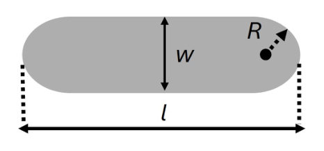
<figcaption class="paper-figure-caption"><b>Fig 1.</b> FIG. 1. Schematic diagram of a single nano island. Here W indicate the width and l is the total length of the nano island. R is radius of semi circle.</figcaption>
</figure>
<figure class="paper-figure-card">
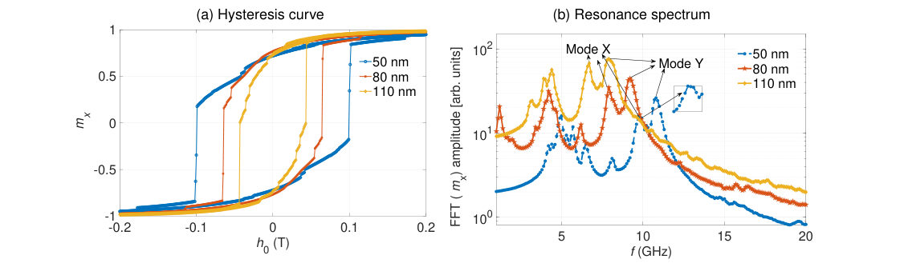
<figcaption class="paper-figure-caption"><b>Fig 2.</b> FIG. 2. Hysteresis loops (a) and resonance spectra (b) for nano islands of widths w = 50, 80, 110 nm and fixed length l = 260 nm.</figcaption>
</figure>
<figure class="paper-figure-card">
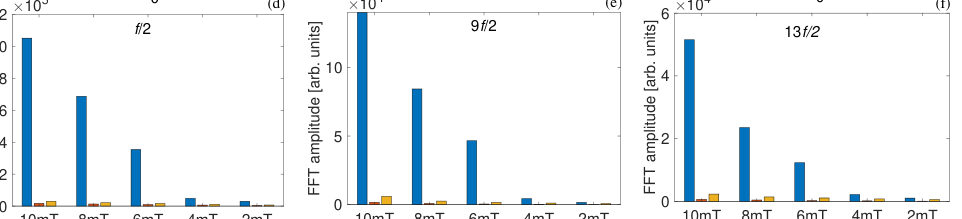
<figcaption class="paper-figure-caption"><b>Fig 3.</b> FIG. 3. Harmonic and subharmonic amplitudes generated under microwave excitation for wide, narrow, and asymmetric kagome artificial spin ice. The wide geometry produces the strongest nonlinear response because its larger volume enhances dipolar interactions, whereas asymmetric leg length distorts the vertex configuration and suppresses coherent collective dynam- ics.</figcaption>
</figure>
<figure class="paper-figure-card">
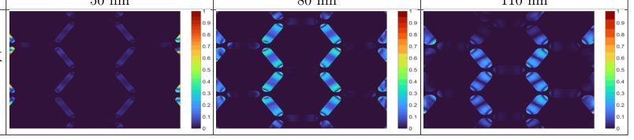
<figcaption class="paper-figure-caption"><b>Fig 4.</b> FIG. 4. Parametric excitation of mode X for kagome nano islands with widths 50, 80 and 110 nm (length = 260 nm). The mode red-shifts with increasing width (fX = 9.7, 7.9, 6.76 GHz for 50, 80 and 110 nm) while the applied field strength decreases (h0 = 75, 40, 30 mT). The 110 nm islands thus reach the largest, most spatially coherent amplitude at the smallest drive, indicating that island width both tunes the eigen-frequency and lowers the parametric threshold for nonlinear amplification.</figcaption>
</figure>
<figure class="paper-figure-card">
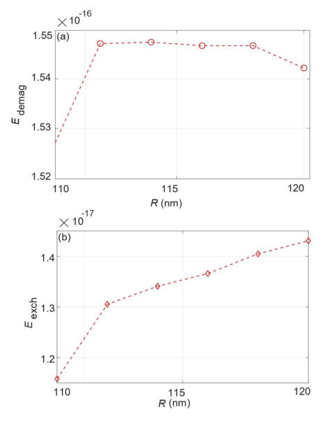
<figcaption class="paper-figure-caption"><b>Fig 5.</b> FIG. 5. Effect of nanoisland edge-radius variation on the de- magnetization and exchange energies is shown. A 1.16 % energy difference in Edemag and 23.6 % energy difference in Eexch is visible when edge radius changes from 0-10nm.</figcaption>
</figure>
</div>

<p><strong>Summary.</strong> The research demonstrates that by manipulating the edge curvature of nanoislands in Artificial Spin Ice, one can precisely engineer nonlinear magnon scattering. This finding establishes tip curvature as an independent control knob, allowing researchers to tune complex magnetic responses like subharmonic generation without compromising the fundamental lattice structure.</p>
<p><strong>Why it may be interesting.</strong> This work provides a concrete example of controlling complex many-body dynamics (magnon interactions) in a solid-state system using precise geometric engineering, which has parallels to designing quantum metamaterials or artificial lattices for wave manipulation.</p>
<details>
<summary>Detailed structure</summary>
<p><strong>Main problem.</strong> The primary goal is engineering nonlinear magnon scattering in Artificial Spin Ice (ASI) by identifying a geometric control parameter that allows tuning of nonlinearity independently from the linear spectrum and lattice density.</p>
<p><strong>Main result.</strong> Edge curvature has been established as a key, footprint-preserving design parameter; dumbbell shapes promote subharmonic spectra, while field orientation controls the second harmonic amplitude in an experimentally accessible way.</p>
<p><strong>Method.</strong> The study relies on micromagnetic simulations solving the Landau–Lifshitz-Gilbert equation to model spin dynamics under microwave excitation.</p>
<p><strong>Model / system.</strong> The system is Artificial Spin Ice (ASI), a geometrically frustrated array of interacting nanoislands, modeled using micromagnetics. The energy includes exchange and demagnetization contributions.</p>
<p><strong>Key observables.</strong> Spin wave resonance spectra, harmonic/subharmonic generation amplitudes, and the angular dependence of the second harmonic amplitude.</p>
<p><strong>Important parameters / regimes.</strong> Edge curvature (e.g., sharp vs. dumbbell tips), nanoisland width ($w$), applied microwave field angle ($    heta$), and lattice spacing.</p>
<p><strong>Assumptions / limitations.</strong> Previous geometric controls suffer from an intrinsic trade-off between modifying nonlinearity and altering the overall island footprint or dipolar coupling.</p>
<p><strong>Figures summary.</strong> Figures show resonance spectra for varying widths, hysteresis loops demonstrating switching behavior, and harmonic spectra confirming subharmonic generation promoted by specific tip curvatures (dumbbell vs. sharp).</p>
<p><strong>Paper structure.</strong> The paper systematically investigates how changing geometric parameters like width and curvature affects the magnon spectrum. It contrasts previous methods with the new finding that curvature decouples nonlinearity from footprint changes, detailing angular dependence measurements.</p>
</details>
<details>
<summary>Abstract</summary>
<p>Artificial spin ice (ASI), composed of geometrically frustrated arrays of interacting nanoislands, provides a versatile platform for reprogrammable magnonic functionality. However, the commonly used geometric control parameters such as island length, width, and aspect ratio simultaneously modify the island footprint, inter island dipolar spacing, and shape anisotropy, making it difficult to tune the nonlinear response independently of the linear spectrum and lattice density. Using micromagnetic simulations of kagome ASI under strong microwave drive, we identify edge curvature as a geometric degree of freedom that separates nonlinear magnon scattering from the island footprint. Sharp tipped islands predominantly generate integer harmonics, whereas dumbbell shaped tips produce a transition toward subharmonic rich spectra by concentrating demagnetizing and exchange fields near the island ends without changing the overall island volume or lattice spacing. By mapping the curvature and drive parameter space, we identify a continuous threshold for subharmonic onset controlled by tip curvature. We further show that the angular dependence of the second harmonic amplitude reverses between sharp and dumbbell geometries, providing an experimentally accessible signature of curvature localized nonlinearity. Width and leg length asymmetry can also modify harmonic amplitudes, but they do not remove the intrinsic trade off between footprint and coupling. These results establish tip curvature as a footprint preserving design parameter for engineering nonlinear magnon scattering in ASI, with implications for reconfigurable magnonic devices.</p>
</details>
<p><sub><a href="#top">↑ back to top</a></sub></p>

<p><a id="paper-2607.06492"></a></p>
<h3 id="correlated-insulating-states-in-twisted-double-bilayer-graphene-enhanced-by-interfacial-effect-on-crocl"><a href="http://arxiv.org/abs/2607.06492v1">Correlated Insulating States in Twisted Double Bilayer Graphene Enhanced by Interfacial Effect on CrOCl</a></h3>
<p><strong>Authors:</strong> Ning Ma, Zekang Zhou, Chiara Cocchi, Maurice Bal, Maarten van Delft, Kenji Watanabe, Takashi Taniguchi, Steffen Wiedmann, Jian-Hao Chen, Mitali Banerjee<br>
<strong>Type:</strong> experiment · <strong>Category:</strong> strongly correlated electrons · <strong>PDF:</strong> <a href="https://arxiv.org/pdf/2607.06492v1">https://arxiv.org/pdf/2607.06492v1</a><br>
<strong>Analysis basis:</strong> full PDF text, analyzed in chunks
<strong>Topic relevance:</strong> 🔥 <code>analog quantum simulation</code> <strong>4/5</strong> · <code>exotic spin models in light-matter</code> <strong>3/5</strong> · <code>spintronics-quantum-optics interface</code> <strong>3/5</strong> · <code>Kondo &amp; dissipative impurity</code> <strong>1/5</strong> · <code>non-equilibrium dynamics</code> <strong>1/5</strong></p>
<div class="figure-strip-hint">↔ Scroll figures horizontally</div>
<div class="paper-figures-scroll">
<figure class="paper-figure-card">
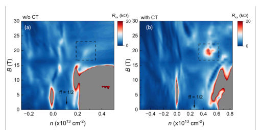
<figcaption class="paper-figure-caption"><b>Fig 1.</b> FIG. 2. Charge transfer-enhanced correlated states at half filling factor under high magnetic field. (a) and (b) The Lan- dau fan diagrams of longitudinal resistance at D = 0.5 V/nm and 0.26 V/nm, corresponding to the regions without or with charge-transfer effect, respectively. The insulating states at ultrahigh magnetic field are shown in the black boxes. The insulating states in the ”charge-transfer” region is enchanced, compared with the one in Fig. 2(a).</figcaption>
</figure>
<figure class="paper-figure-card">
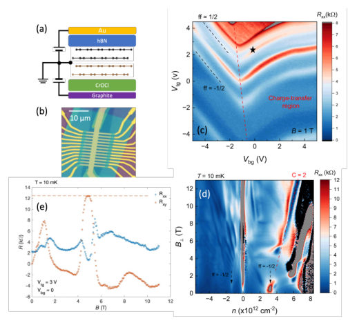
<figcaption class="paper-figure-caption"><b>Fig 2.</b> FIG. 1. Electrical measurement of TDBG-COC heterostruc- ture under the charge-transfer effect. (a) Illustration of the structure of TDBG-COC sample. (b) Optical image of the device measured in the main text, which has been etched into Hall bar geometry by using O2 and SF6 plasma. The inset scale bar is 10 µm. (c) Longitudinal resistance as a function of dual gates measured at 10 mK and 1 T. The boundary of the region influenced by charge-transfer effect is indicated by red dashed line. Resistance peaks of filling factor(ff) = 1/2 and -1/2 are illustrated as the two black dashed lines. (d) Landau fan diagram measured at 10 mK, with D fixed at 0.26 V/nm. Half-filling states at zero field are...</figcaption>
</figure>
<figure class="paper-figure-card">
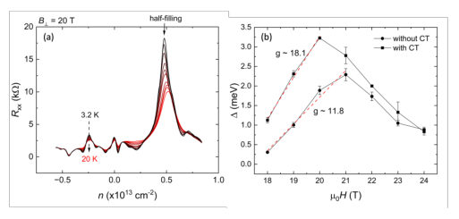
<figcaption class="paper-figure-caption"><b>Fig 3.</b> FIG. 3. Valley polarized correlated insulating state at half- filling factor under high magnetic field. (a) Temperature de- pendence of the correlated states at different carrier densities under 20 T. The resistance of the half-filling state with charge- transfer effect decreases with elevated temperature from 3.2 K to 20 K. (b) Estimation of the thermal activation gap of the insulating state at half-filling with or without the effect of charge transfer, respectively. The g factors of half-filling state with (18.1) or without (11.8) charge-transfer(CT) effect, re- spectively, are extracted from the slope of the relationship ∆ versus out-of-plane magnetic field.</figcaption>
</figure>
<figure class="paper-figure-card">
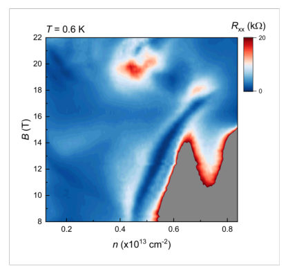
<figcaption class="paper-figure-caption"><b>Fig 4.</b> FIG. 5. Zoom-in Landau fan diagram measured at 0.6 K, with a gate-sweeping step of 0.02 V. Compared with the fea- tures in Fig.2(b), the enchanced insulating state occurred at the same carrier density and magnetic field. Besides, the re- sistance of the enhanced insulating state in both figures are comparable. It proves the enhanced insulating state is repro- ducible under different scanning rates of gate.</figcaption>
</figure>
<figure class="paper-figure-card">
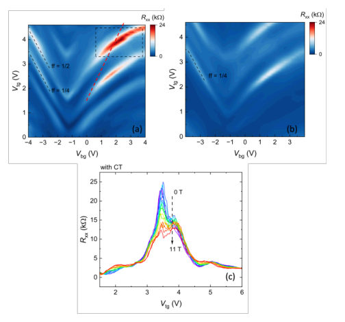
<figcaption class="paper-figure-caption"><b>Fig 5.</b> FIG. 4. In-plane field dependence of insulating states under high magnetic field. (a) Dual gate map measured at 4.2 K and 20 T of perpendicular field. (b) Same dual gate map as (a) measured at 4.2 K, but under 20 T and 11 T of in-plane field. Half and quarter-filling states are indicated by the black dashed lines in (a) and (b).(c) The evolution of resistance of half-filling state in the black dahsed box in (a), with increasing in-plane field from 0 to 11 T. Gate voltages are scanning along the red dashed line indicated in fig.4 (a).</figcaption>
</figure>
</div>

<p><strong>Summary.</strong> This experiment explores correlated insulating states in TDBG interfaced with $    ext{CrOCl}$. By measuring transport properties under high magnetic fields, the authors conclude that charge-transfer effects at the interface are responsible for enhancing these correlated states. This demonstrates a powerful method of interfacial engineering to control exotic electronic phases in moiré graphene systems.</p>
<p><strong>Why it may be interesting.</strong> The work provides direct experimental evidence of how interfacial chemistry (charge transfer) can be used as a tuning knob to manipulate strongly correlated electronic phases in 2D materials, which is highly relevant for designing novel quantum devices.</p>
<details>
<summary>Detailed structure</summary>
<p><strong>Main problem.</strong> The study investigates the emergence and nature of correlated insulating states in twisted double bilayer graphene (TDBG) when interfaced with an antiferromagnetic substrate ($  ext{CrOCl}$). The core question is whether the observed effects are due to magnetic proximity or charge-transfer interactions.</p>
<p><strong>Main result.</strong> The enhanced correlated insulating state at half-filling is primarily attributed to a charge-transfer effect between TDBG and $    ext{CrOCl}$, rather than direct magnetic exchange. This interfacial engineering opens a new route for controlling correlated states in moiré systems.</p>
<p><strong>Method.</strong> Transport measurements were performed using ultrahigh magnetic fields and low temperatures, analyzing longitudinal/Hall resistance, Landau fan diagrams, and temperature dependence of the insulating state.</p>
<p><strong>Model / system.</strong> The physical system is Twisted Double Bilayer Graphene (TDBG) placed on a $ ext{CrOCl}$ substrate. The analysis focuses on correlated electron behavior in this moiré heterostructure under external magnetic fields.</p>
<p><strong>Key observables.</strong> Enhanced resistance at half-filling, thermal activation gap ($\Delta$), and the effective g-factor derived from temperature dependence measurements.</p>
<p><strong>Important parameters / regimes.</strong> Ultrahigh magnetic field (up to 20 T), low temperatures ($10 	ext{ mK}$), and the charge-transfer doping regime.</p>
<p><strong>Assumptions / limitations.</strong> The primary assumption is that the observed enhancement stems from a charge-related reconstruction of the band structure due to interfacial coupling, distinguishing it from purely magnetic effects.</p>
<p><strong>Figures summary.</strong> Figures show gate maps indicating the charge-transfer boundary, Landau fan diagrams comparing states with and without CT effect, and plots demonstrating how the insulating gap ($\Delta$) and g-factor change with temperature and applied magnetic field.</p>
<p><strong>Paper structure.</strong> The paper progresses by first establishing the experimental platform and observing the correlated state. It then systematically analyzes the dependence of this state on external fields (B) and temperature (T), using quantitative diagnostics like $\Delta$ and $g$-factors to confirm the role of charge transfer over magnetism.</p>
</details>
<details>
<summary>Abstract</summary>
<p>Interaction between different two dimensional materials can give rise to many exotic physical phenomena which are rarely observed in intrinsic materials. Recently, several theoretical and experimental works have revealed that magnetic proximity effect between pristine graphene and magnetic substrates can lead to the emergence of quantum anomalous Hall states and quantum spin Hall states. However, interplay between correlated states in graphene-based systems and magnetic materials has seldom been studied. Here we perform the transport measurement at ultrahigh magnetic field of twisted double bilayer graphene (TDBG) on CrOCl (COC) substrate, which is an antiferromagnetic material. Instead of a magnetic-exchange effect on graphene, we observe an enhanced correlated insulating state at half-filling factor of TDBG as a result of the charge-transfer process between TDBG and COC. The temperature and magnetic field dependence of this enhanced state are further studied. Our results demonstrate the influence of charge-related effect at the interface, and shed a light on a new route for manipulating the correlated states in graphene-based moiré systems using interfacial engineering.</p>
</details>
<p><sub><a href="#top">↑ back to top</a></sub></p>

<p><a id="paper-2607.05942"></a></p>
<h3 id="exact-flat-bands-in-a-3d-photonic-crystal"><a href="http://arxiv.org/abs/2607.05942v1">Exact flat bands in a 3D photonic crystal</a></h3>
<p><strong>Authors:</strong> Kin Hung Fung, Yan-Long Chen, C. T. Chan, Qinghua Guo<br>
<strong>Type:</strong> theory · <strong>Category:</strong> other · <strong>PDF:</strong> <a href="https://arxiv.org/pdf/2607.05942v1">https://arxiv.org/pdf/2607.05942v1</a><br>
<strong>Analysis basis:</strong> full PDF text, analyzed in chunks
<strong>Topic relevance:</strong> 🔥 <code>analog quantum simulation</code> <strong>4/5</strong> · <code>correlated cavity matter</code> <strong>3/5</strong> · <code>driven-dissipative phase transition</code> <strong>1/5</strong> · <code>interference shaping light</code> <strong>1/5</strong></p>
<div class="figure-strip-hint">↔ Scroll figures horizontally</div>
<div class="paper-figures-scroll">
<figure class="paper-figure-card">
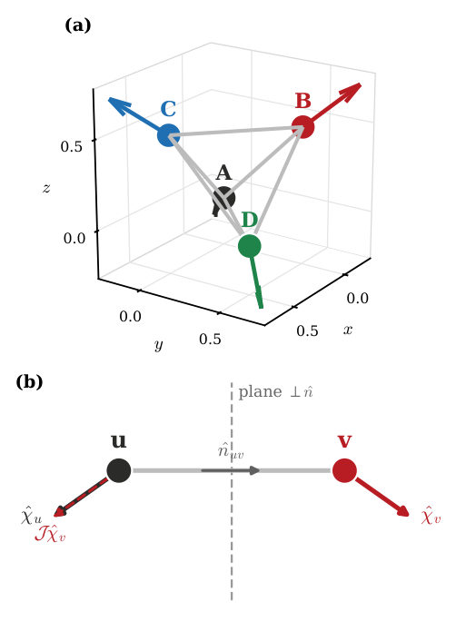
<figcaption class="paper-figure-caption"><b>Fig 1.</b> FIG. 1. (a) The metallic space-group-224 network: four cav- ities A, B, C, D at the ¯43m Wyckoff sites of Pn¯3m in the cubic cell, six face-diagonal channels, and the self-adaptive radial dipole axes ˆχu of Eq. (4) (arrows). (b) Exchange mechanism at the balance JL = −JT . There the bond ten- sor J (ˆn) = JT (I3 −2ˆnˆnT) is JT times the Householder re- flection about the plane ⊥ˆn; because the radial axes obey ˆχv −ˆχu = 2 p</figcaption>
</figure>
<figure class="paper-figure-card">
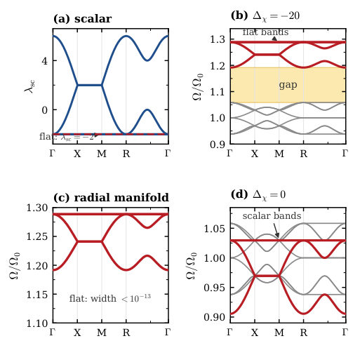
<figcaption class="paper-figure-caption"><b>Fig 2.</b> FIG. 2. Scalar reference and exact vector flat bands of the space-group-224 network along Γ →X →M →R →Γ. (a) The scalar four-band Hamiltonian Hsc(k) in its eigen- value λsc: two flat bands at λsc = −2 (dashed) and two dispersive bands. It is plotted with the same coupling sign as the realized radial sector (Jχ = JT at balance); because the frequency map Ω/Ω0 = √1 −gλ is decreasing, the cor- responding vector radial bands in (b),(c) appear with the flat pair at the top. (b) Full twelve-band vector spectrum at ∆χ = −20 and the balance JL = −JT : four radial bands (crimson, = ∆χI4 + Hsc(k) of Eq. (11)) detach above the eight remaining vector bands (grey) across a frequency gap (shaded), and...</figcaption>
</figure>
<figure class="paper-figure-card">
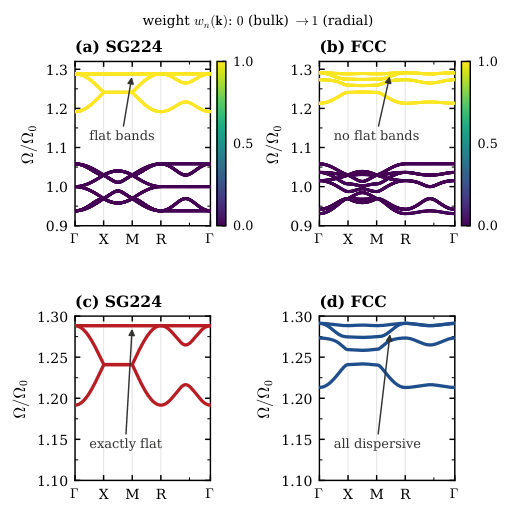
<figcaption class="paper-figure-caption"><b>Fig 3.</b> FIG. 3. Symmetry origin of the exact scalar sector, shown through band physics (∆χ = −20, g = 0.03, JL = −JT ). (a) Vector bands with the Pn¯3m (¯43m) radial axes of Eq. (4), colored by radial weight wn(k) = ∥QTψn(k)∥2: four radial bands of unit weight detach above the gap and two of them are exactly flat—the projected scalar sector realized as full- vector eigenstates. (b) The same crystal with a single com- mon (FCC-equivalent) radial axis on every site: the detached sector disperses and its weights are no longer quantized, so no exact scalar band survives. (c) Zoom on the SG224 radial manifold of (a): two exactly flat bands (residual bandwidth &lt; 10−13) and two dispersive bands. (d) Zoom...</figcaption>
</figure>
</div>

<p><strong>Summary.</strong> The paper shows how to engineer exact flat energy bands in a 3D photonic crystal by exploiting its underlying symmetry. By analyzing the vector nature of Maxwell's equations and projecting the problem onto a radial subspace, the authors derive a necessary coupling balance condition ($J_L = -J_T$). Satisfying this condition allows the system to host an exactly solvable scalar sector with flat bands.</p>
<p><strong>Why it may be interesting.</strong> This work provides a powerful, symmetry-based design rule for realizing robust flat bands in complex electromagnetic structures, which is highly relevant to quantum simulation platforms using photonic lattices or metamaterials.</p>
<details>
<summary>Detailed structure</summary>
<p><strong>Main problem.</strong> The primary challenge addressed is engineering exact flat bands in a fully vectorial photonic crystal, overcoming the obstruction posed by Maxwell's equations which typically prevents simple scalar-based band engineering.</p>
<p><strong>Main result.</strong> The authors demonstrate that an exact scalar sector carrying flat bands can be realized in a 3D metallic network if the coupling constants satisfy a specific symmetry condition: $J_L = -J_T$.</p>
<p><strong>Method.</strong> The analysis involves projecting the full twelve-band vector Hamiltonian onto a radial subspace using analytical identities, leading to an effective scalar problem whose solvability dictates the flat band existence.</p>
<p><strong>Model / system.</strong> The system is a 3D metallic network structured as a space-group-224 lattice, modeled by a coupled-dipole Hamiltonian. The physics is analyzed via projecting the vector dynamics onto a radial subspace to find an effective scalar Hamiltonian.</p>
<p><strong>Key observables.</strong> Flat band frequency ($\lambda$), energy gap opening, and the ratio of longitudinal ($J_L$) to transverse ($J_T$) coupling constants.</p>
<p><strong>Important parameters / regimes.</strong> The anisotropy parameter ($\Delta\chi$), which controls spectral separation; the critical balance condition $J_L = -J_T$.</p>
<p><strong>Assumptions / limitations.</strong> The analysis relies on deriving an effective Hamiltonian by assuming that the radial subspace forms an invariant subspace of the full vector Hamiltonian, requiring the specific coupling balance.</p>
<p><strong>Figures summary.</strong> Figures illustrate the geometry (space-group-224), compare band structures for scalar vs. vector systems, and show how the exact flat bands appear only when the coupling achieves a Householder reflection symmetry ($J_L = -J_T$).</p>
<p><strong>Paper structure.</strong> The paper establishes the difficulty of vectorial flatness, derives an effective Hamiltonian by projection onto the radial subspace, identifies the necessary symmetry condition ($J_L = -J_T$) for exact decoupling, and confirms this analytically and numerically.</p>
</details>
<details>
<summary>Abstract</summary>
<p>Photonic flat bands are hard to engineer because Maxwell's equations are vectorial: transversality obstructs the localized scalar-like bases that generate destructive-interference flat bands in tight-binding models. We show that a three-dimensional metallic network of dipolar cavities joined by waveguide channels--a fully vectorial photonic crystal belonging to space group No. 224--hosts an exact scalar sector, carrying exact flat bands. The twelve-band vector problem contains one self-adaptive radial dipole axis per site whose projection is exactly the scalar four-band Hamiltonian of the same network. A microwave-scale coupled-dipole calculation confirms this scalar-vectorial duality. The result is a symmetry-based design rule for scalar-like flat bands in reciprocal vector media.</p>
</details>
<p><sub><a href="#top">↑ back to top</a></sub></p>

<p><a id="paper-2607.06390"></a></p>
<h3 id="effect-of-charge-imbalance-potential-relaxation-on-the-high-frequency-vortex-dynamics-and-kinetic-inductance-of-superconducting-circuits"><a href="http://arxiv.org/abs/2607.06390v1">Effect of charge-imbalance potential relaxation on the high-frequency vortex dynamics and kinetic inductance of superconducting circuits</a></h3>
<p><strong>Authors:</strong> R. I. Kinzibaev, V. S. Stolyarov, A. S. Mel'nikov<br>
<strong>Type:</strong> theory · <strong>Category:</strong> other · <strong>PDF:</strong> <a href="https://arxiv.org/pdf/2607.06390v1">https://arxiv.org/pdf/2607.06390v1</a><br>
<strong>Analysis basis:</strong> full PDF text, analyzed in chunks
<strong>Topic relevance:</strong> <code>Keldysh / 2PI / non-Gaussian methods</code> <strong>3/5</strong> · <code>correlated / nonlocal dissipation</code> <strong>3/5</strong> · <code>driven-dissipative phase transition</code> <strong>3/5</strong> · <code>methods for driven-dissipative</code> <strong>3/5</strong> · <code>non-equilibrium dynamics</code> <strong>2/5</strong> · <code>non-equilibrium universality</code> <strong>2/5</strong> · <code>Frenkel-Kontorova</code> <strong>1/5</strong> · <code>Kondo &amp; dissipative impurity</code> <strong>1/5</strong></p>
<div class="figure-strip-hint">↔ Scroll figures horizontally</div>
<div class="paper-figures-scroll">
<figure class="paper-figure-card">
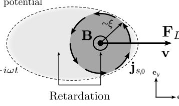
<figcaption class="paper-figure-caption"><b>Fig 1.</b> FIG. 1. Schematic illustration of a moving vortex with the core radius of the order of coherence length ξ and velocity v. The region with the induced charge-imbalance potential is shown by the dashed line. Here js,∞is the ac transport cur- rent producing the Lorentz force FL, js,0 is superfluid current circulating around the vortex core, B = Bzez is magnetic field (Bz &gt; 0).</figcaption>
</figure>
</div>

<p><strong>Summary.</strong> This theoretical work analyzes vortex motion in superconductors by incorporating the crucial role of charge-imbalance potential relaxation into the time-dependent Ginzburg-Landau framework. It derives an advanced equation of motion that captures retardation effects, showing how these mechanisms fundamentally alter the kinetic inductance observed in superconducting circuits at high frequencies.</p>
<p><strong>Why it may be interesting.</strong> While focused on superconductivity, the inclusion of dynamic potential relaxation and resulting frequency-dependent inertia/damping mechanisms provides a rich model for understanding dissipative dynamics in complex quantum systems near phase transitions.</p>
<details>
<summary>Detailed structure</summary>
<p><strong>Main problem.</strong> The study investigates how the relaxation of the charge-imbalance potential influences the high-frequency dynamics of Abrikosov vortices in superconducting circuits.</p>
<p><strong>Main result.</strong> Retardation effects, governed by this potential relaxation, significantly alter the vortex equation of motion and consequently modify the kinetic inductance of superconducting devices at high frequencies.</p>
<p><strong>Method.</strong> The analysis utilizes the time-dependent Ginzburg-Landau (TDGL) equations, employing perturbation theory and Fourier transforms to derive frequency-domain equations for vortex velocity and supercurrent density.</p>
<p><strong>Model / system.</strong> The system is a Type-II superconducting sample carrying a microwave current. The model is based on extending the TDGL framework to account for charge-imbalance potential dynamics, which governs the retarded response of vortices.</p>
<p><strong>Key observables.</strong> Kinetic inductance ($L_k$), vortex velocity ($  ilde{v}(\omega)$), and the total dynamic impedance contribution from vortices ($z_v$).</p>
<p><strong>Important parameters / regimes.</strong> Characteristic timescales like the Ginzburg-Landau relaxation time ($   au_E$) and frequency regimes relative to $\omega	au_E$.</p>
<p><strong>Assumptions / limitations.</strong> The analysis is primarily restricted to gapless superconductors in the dirty limit, and approximations are made regarding the averaging over the vortex lattice.</p>
<p><strong>Figures summary.</strong> Figure 1 schematically illustrates a moving vortex, detailing related quantities like core radius, induced charge-imbalance potential, and various supercurrent components.</p>
<p><strong>Paper structure.</strong> The paper builds from the fundamental TDGL equations to derive an effective equation of motion for vortex dynamics that incorporates both Ohmic dissipation and retardation effects arising from the charge-imbalance relaxation. This leads to a frequency-dependent impedance calculation affecting $L_k$.</p>
</details>
<details>
<summary>Abstract</summary>
<p>We show that relaxation of the charge-imbalance potential plays a key role in the retarded dynamics of Abrikosov vortices in a type-II superconducting sample carrying a microwave current. Starting from the time-dependent Ginzburg--Landau equations we derive the vortex equation of motion accounting both the dissipation and retardation effects. The retardation is governed by the dynamics of the charge-imbalance potential and reveals itself at characteristic timescales diverging near the superconducting critical temperature $T_{c}$. These retardation effects in vortex dynamics strongly affect the kinetic inductance of superconducting circuits being, thus, responsible for the magnetic field dependence of characteristics of different superconducting devices in the high frequency range.</p>
</details>
<p><sub><a href="#top">↑ back to top</a></sub></p>

<p><a id="paper-2607.06077"></a></p>
<h3 id="breathing-k-gap-events-and-instability-on-instability-in-nonlinear-photonic-time-crystals"><a href="http://arxiv.org/abs/2607.06077v1">Breathing k-Gap Events and Instability on Instability in Nonlinear Photonic Time Crystals</a></h3>
<p><strong>Authors:</strong> Liang Zhang, Chenhao Pan, Yiming Pan<br>
<strong>Type:</strong> theory · <strong>Category:</strong> other · <strong>PDF:</strong> <a href="https://arxiv.org/pdf/2607.06077v1">https://arxiv.org/pdf/2607.06077v1</a><br>
<strong>Analysis basis:</strong> full PDF text, analyzed in chunks
<strong>Topic relevance:</strong> <code>driven-dissipative phase transition</code> <strong>3/5</strong> · <code>non-equilibrium dynamics</code> <strong>3/5</strong> · <code>non-equilibrium universality</code> <strong>2/5</strong> · <code>Frenkel-Kontorova</code> <strong>1/5</strong> · <code>Keldysh / 2PI / non-Gaussian methods</code> <strong>1/5</strong> · <code>analog quantum simulation</code> <strong>1/5</strong> · <code>correlated / nonlocal dissipation</code> <strong>1/5</strong> · <code>correlated cavity matter</code> <strong>1/5</strong> · <code>interference shaping light</code> <strong>1/5</strong> · <code>methods for driven-dissipative</code> <strong>1/5</strong></p>
<div class="figure-strip-hint">↔ Scroll figures horizontally</div>
<div class="paper-figures-scroll">
<figure class="paper-figure-card">
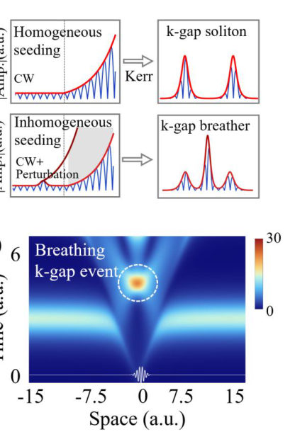
<figcaption class="paper-figure-caption"><b>Fig 1.</b> Figure 1| From k-gap amplification to a breathing k-gap event in nonlinear</figcaption>
</figure>
<figure class="paper-figure-card">
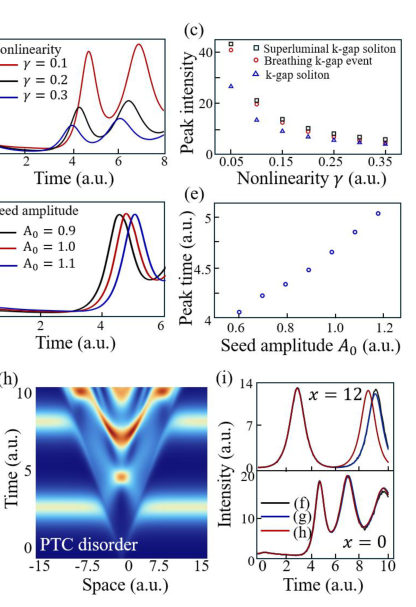
<figcaption class="paper-figure-caption"><b>Fig 2.</b> Figure 2| Parameter control and robustness of breathing k-gap events. (a)</figcaption>
</figure>
<figure class="paper-figure-card">
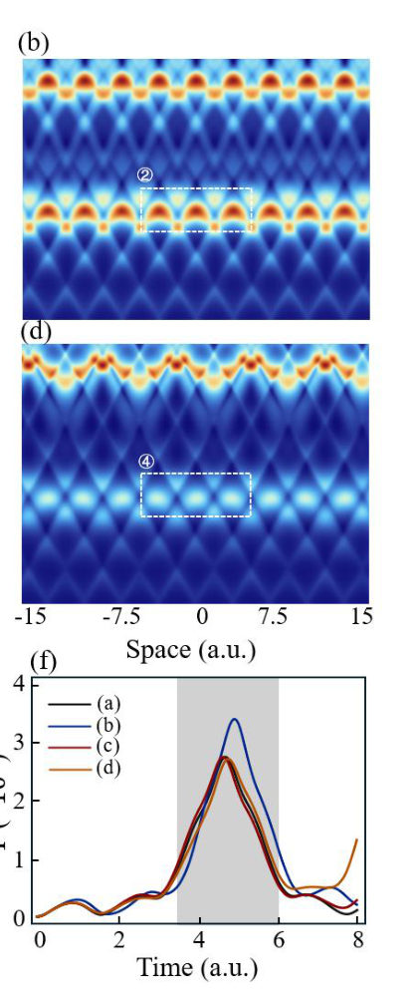
<figcaption class="paper-figure-caption"><b>Fig 3.</b> Figure 3| Phase-engineered collective patterns of breathing k-gap events. (a)</figcaption>
</figure>
</div>

<p><strong>Summary.</strong> The paper investigates the physics of photonic time crystals where energy gaps (k-gaps) are opened by temporal modulation. It demonstrates that perturbing the resulting nonlinear soliton background triggers a unique 'breathing k-gap event.' This mechanism, termed instability on instability, allows for deterministic control over extreme spatiotemporal wave generation using engineered seeding techniques.</p>
<p><strong>Why it may be interesting.</strong> This work bridges nonlinear optics with condensed matter concepts of bandgaps and instability, providing a clear mechanism (instability on instability) for generating complex wave phenomena in periodically structured media, which is highly relevant to advanced photonics and metamaterials research.</p>
<details>
<summary>Detailed structure</summary>
<p><strong>Main problem.</strong> The study investigates the generation and control of transient spatiotemporal wave excitations, termed 'breathing k-gap events,' within nonlinear photonic time crystals (PTCs). It specifically addresses the underlying mechanism identified as an 'instability on instability.'</p>
<p><strong>Main result.</strong> These breathing events are shown to be robust against noise and disorder and can be deterministically controlled by engineering the initial seeding phase or amplitude. This establishes k-gap engineering as a powerful method for controlling extreme spatiotemporal waves in time-varying media.</p>
<p><strong>Method.</strong> The analysis uses coupled-mode equations derived from Maxwell's equations, modeling the nonlinear wave propagation using a slowly-varying envelope approximation and Floquet-Bloch theory.</p>
<p><strong>Model / system.</strong> The system is Nonlinear Photonic Time Crystals (PTCs) characterized by periodically modulated permittivity ($\epsilon_1(t)$). The dynamics are governed by coupled nonlinear evolution equations for forward ($A_f$) and backward ($A_b$) propagating envelopes, incorporating Kerr nonlinearity.</p>
<p><strong>Key observables.</strong> Breathing k-gap event peak intensity, temporal shift of the excitation, spatially integrated intensity $P(t)$, and collective breathing patterns.</p>
<p><strong>Important parameters / regimes.</strong> Kerr coefficient ($\gamma$), modulation depth ($\delta$), initial seed amplitude ($A_0$), and phase engineering parameters.</p>
<p><strong>Assumptions / limitations.</strong> The derivation relies on the assumption of small modulation depth ($\delta \ll 1$) and the use of the slowly-varying envelope approximation for deriving the coupled nonlinear equations.</p>
<p><strong>Figures summary.</strong> Figures illustrate the PTC setup, the formation of k-gap soliton trains, and the resulting breathing event. They also show parameter dependence (e.g., intensity vs $\gamma$ or time delay vs $A_0$) and examples of phase-engineered collective patterns.</p>
<p><strong>Paper structure.</strong> The paper first derives the governing coupled nonlinear equations for the forward and backward envelopes using a coupled-mode framework based on Floquet theory. It then analyzes the dynamics, showing k-gap soliton formation followed by triggering the breathing event via localized perturbation. Finally, it demonstrates control over this event using varying nonlinearity or engineered seeding phases.</p>
</details>
<details>
<summary>Abstract</summary>
<p>Photonic time crystals (PTCs) host momentum bandgaps, or k gaps, that enable parametric amplification and lasing of seeded fields. In nonlinear PTCs, Kerr saturation dynamically suppresses the exponential growth, reshaping k-gap amplification into an active, spatially homogeneous k gap soliton train. Here, we show that a localized perturbation on this unstable background then nucleates a transient spatiotemporal excitation: the breathing k gap event. Unlike Peregrine breathers emerging from modulational instability on a planewave background, this event extracts energy from competing host k gap solitons and remains sustained by their interaction. We identify this process as an instability on instability mechanism intrinsic to nonlinear k gap dynamics. The event is robust against noise and disorder, and can be deterministically reshaped into collective breathing patterns by periodic and phase engineered seeding. These results establish k gap engineering as a route to generating and controlling extreme spatiotemporal waves in photonic time varying media.</p>
</details>
<p><sub><a href="#top">↑ back to top</a></sub></p>

<p><a id="paper-2607.06520"></a></p>
<h3 id="multi-knob-switchable-chiral-superconductivity-quartet-in-rhombohedral-graphene"><a href="http://arxiv.org/abs/2607.06520v1">Multi-Knob Switchable Chiral Superconductivity Quartet in Rhombohedral Graphene</a></h3>
<p><strong>Authors:</strong> Zhenqi Hua, Shenyong Ye, Phatthanon Pattanakanvijit, Gang Shi, Tonghang Han, Emily Aitken, Jixiang Yang, Junseok Seo, Haoyang Liu, Ran Hao, Kaitai Xiao, Jiaxing Guo, Vo Tien Phong, Kenji Watanabe, Takashi Taniguchi, Chunli Huang, Cyprian Lewandowski, Long Ju, Peng Xiong, Zhengguang Lu<br>
<strong>Type:</strong> experiment · <strong>Category:</strong> strongly correlated electrons · <strong>PDF:</strong> <a href="https://arxiv.org/pdf/2607.06520v1">https://arxiv.org/pdf/2607.06520v1</a><br>
<strong>Analysis basis:</strong> full PDF text, analyzed in chunks
<strong>Topic relevance:</strong> <code>analog quantum simulation</code> <strong>3/5</strong> · <code>driven-dissipative phase transition</code> <strong>3/5</strong> · <code>exotic spin models in light-matter</code> <strong>3/5</strong> · <code>spintronics-quantum-optics interface</code> <strong>2/5</strong> · <code>Kondo &amp; dissipative impurity</code> <strong>1/5</strong> · <code>QC/QI experiment</code> <strong>1/5</strong> · <code>methods for driven-dissipative</code> <strong>1/5</strong> · <code>non-equilibrium dynamics</code> <strong>1/5</strong></p>
<div class="figure-strip-hint">↔ Scroll figures horizontally</div>
<div class="paper-figures-scroll">
<figure class="paper-figure-card">

<figcaption class="paper-figure-caption"><b>Fig 1.</b> Fig. 1 | Chiral superconductivity (CSC) in rhombohedral hexalayer graphene (R6G). a,</figcaption>
</figure>
<figure class="paper-figure-card">
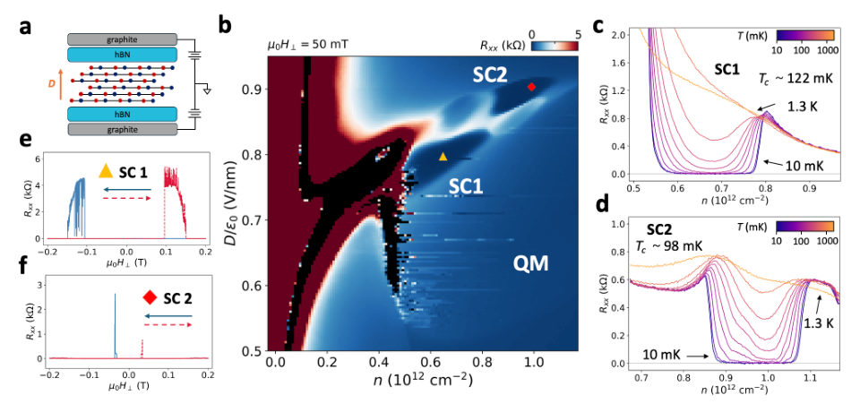
<figcaption class="paper-figure-caption"><b>Fig 2.</b> Figure 1b shows the longitudinal resistance 𝑅$$ of device D1 measured at base temperature (10</figcaption>
</figure>
<figure class="paper-figure-card">
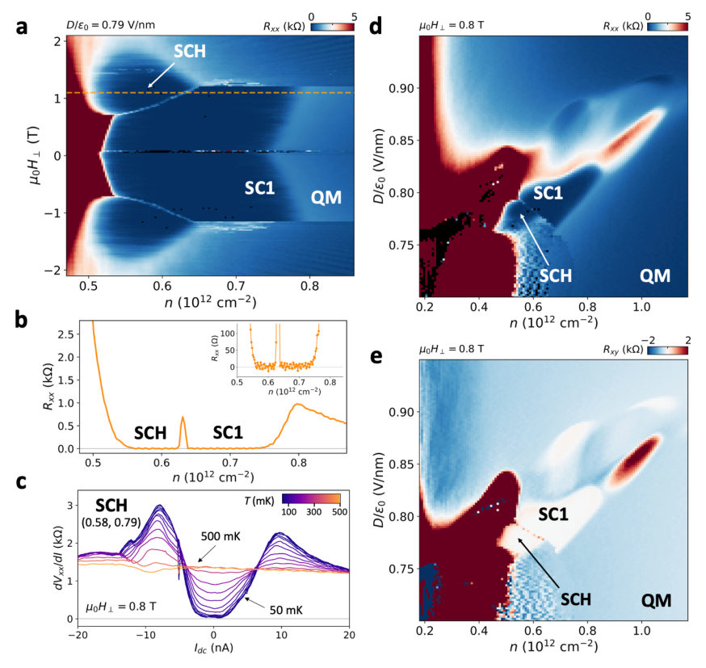
<figcaption class="paper-figure-caption"><b>Fig 3.</b> Fig. 2 | Out-of-plane magnetic field induced superconductivity. a, 𝑅$$ as a function of 𝑛 and 𝐻!</figcaption>
</figure>
<figure class="paper-figure-card">
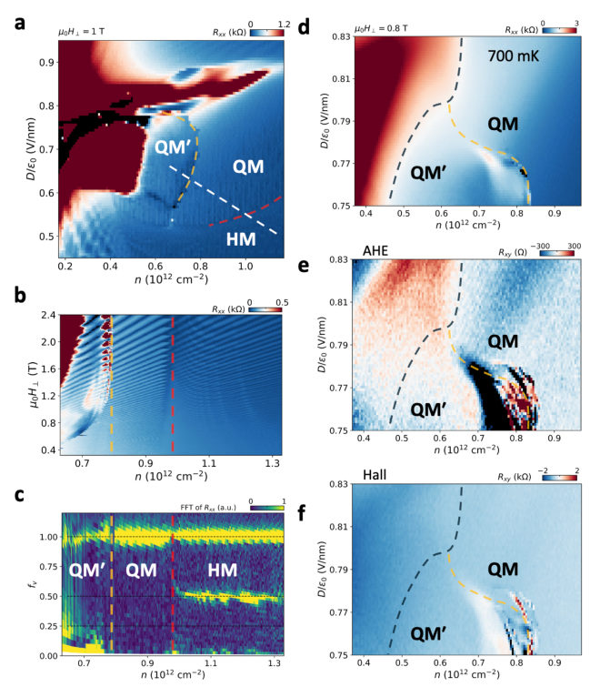
<figcaption class="paper-figure-caption"><b>Fig 4.</b> Fig. 3 | Fermiology of neighboring QM and valley polarization of SCH parent state. a, Base</figcaption>
</figure>
<figure class="paper-figure-card">
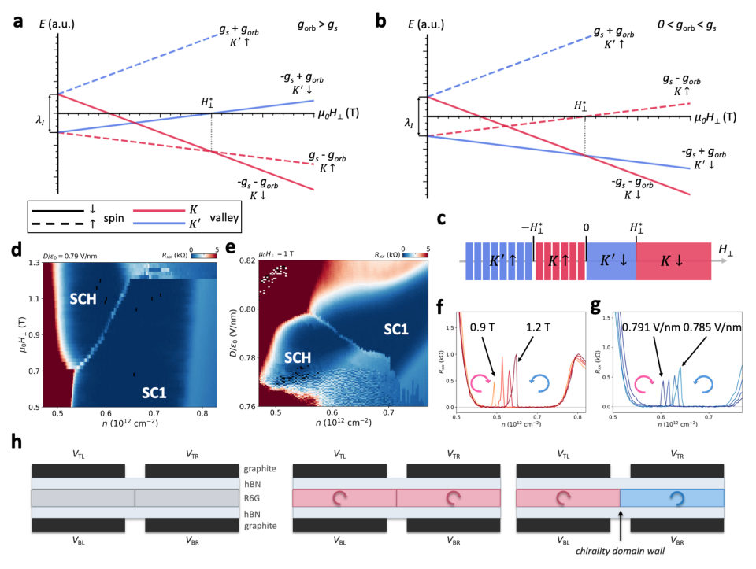
<figcaption class="paper-figure-caption"><b>Fig 5.</b> Fig. 4 | Magnetic-field selection and electrostatic programming of SC1 and SCH. a-b, Schematic</figcaption>
</figure>
</div>

<p><strong>Summary.</strong> This work demonstrates that rhombohedral graphene acts as a highly tunable platform capable of hosting a switchable quartet of chiral superconductors. By controlling the carrier density, gate voltage, and magnetic field, researchers can programmatically access different spin-valley polarized superconducting states. This establishes $    ext{R}6 ext{G}$ for potential applications in topological quantum electronics.</p>
<p><strong>Why it may be interesting.</strong> The ability to engineer multiple, distinct topological superconducting phases using external electric and magnetic fields in a single 2D material platform is highly relevant for building quantum circuits or studying exotic pairing mechanisms beyond simple BCS theory.</p>
<details>
<summary>Detailed structure</summary>
<p><strong>Main problem.</strong> The goal is to explore and control all spin-valley flavors of superconductivity in rhombohedral graphene ($   ext{R}6 ext{G}$) to realize programmable superconducting networks.</p>
<p><strong>Main result.</strong> The authors report the realization of a switchable chiral-superconductor quartet in $  ext{R}6 ext{G}$ by tuning external fields, establishing the material as a multi-knob platform for novel topological devices.</p>
<p><strong>Method.</strong> Transport measurements, including resistance mapping ($R_{xx}$, $R_H$), anomalous Hall measurements, and quantum oscillation analysis, were performed across varying magnetic fields and gate voltages.</p>
<p><strong>Model / system.</strong> The physical system is rhombohedral hexalayer graphene ($   ext{R}6 ext{G}$), which possesses multiple degrees of freedom (spin, valley, layer) allowing for the study of spin-valley-polarized superconductivity. The physics involves competition between Kane-Mele-like spin-orbit coupling and magnetic field coupling.</p>
<p><strong>Key observables.</strong> Zero-resistance states ($  ext{SC}1$, $    ext{SCH}$), anomalous Hall resistance sign reversal, quantum oscillation frequencies, and the ability to switch superconducting phases using external knobs.</p>
<p><strong>Important parameters / regimes.</strong> Carrier density ($n$), gate displacement field ($D$), and out-of-plane magnetic field ($H_{\perp}$).</p>
<p><strong>Assumptions / limitations.</strong> The parent state switching ($    ext{QM}     o   ext{QM}'$) is interpreted as arising from the competition between SOC and magnetic coupling; the existence of Majorana modes at domain walls is a potential consequence.</p>
<p><strong>Figures summary.</strong> Figures illustrate superconducting phase diagrams in $(n, D)$ space showing $  ext{SC}1$ and $ ext{SCH}$ regions. They also map out the emergence of $ ext{SCH}$ above $0.8 	ext{ T}$ and demonstrate programmable switching between states using gate voltage or magnetic field tuning.</p>
<p><strong>Paper structure.</strong> The paper systematically maps superconducting phases in the $(n, D, H_{\perp})$ parameter space. It first identifies low-field chiral superconductivity ($    ext{SC}1$, $    ext{SC}2$), then reports the emergence of a high-field state ($    ext{SCH}$), and finally argues that tuning all three knobs allows access to a full quartet of spin-valley polarized superconducting states.</p>
</details>
<details>
<summary>Abstract</summary>
<p>Chiral superconductors break orbital time-reversal symmetry and may host topological quasiparticles with non-Abelian statistics. In rhombohedral graphene, superconductivity develops from a spin-valley-polarized quarter-metal (QM) parent state and features unique magnetic hysteresis of resistance that indicates orbital time-reversal-symmetry-breaking. Exploring and controlling the full spin-valley flavors of such superconductivity could enable novel superconducting and topological devices, but have remained unexplored. Here we report transport measurements on rhombohedral hexalayer graphene (R6G), which reveal a new superconducting state (SCH) that is induced by an out-of-plane magnetic field, in addition to chiral superconductivity (CSC) similar to those observed in thinner layers. This SCH state emerges above 0.8 T, persists up to 1.6 T and can be switched on/off by magnetic field $H_\perp$, carrier density $n$, and gate displacement field $D$. Quantum oscillations and anomalous Hall measurements show that SCH stems from a field-induced quarter-metal (QM$'$) parent phase, which carries orbital magnetization opposite to that of the zero-field QM. Across the full $(n, D, H_\perp)$ parameter space, superconductivity can be realized from all four spin-valley isospin flavors, establishing a switchable chiral-superconductor quartet in R6G. We interpret the parent-state switching as arising from competition between a Kane-Mele-like spin-valley splitting and magnetic-field coupling to spin-valley-dependent magnetic moments. Our work establishes rhombohedral graphene as a multi-knob platform for different isospin-polarized superconductivities, which enables programmable superconducting networks with possible Majorana modes along domain walls.</p>
</details>
<p><sub><a href="#top">↑ back to top</a></sub></p>

<p><a id="paper-2607.05548"></a></p>
<h3 id="effect-of-pressure-on-the-magnetic-properties-of-comath1037mathfemath1038mathmath1039mathgetemath1040math"><a href="http://arxiv.org/abs/2607.05548v1">Effect of pressure on the magnetic properties of (Co$_{0.5}$Fe$_{0.5}$)$_5$GeTe$_2$</a></h3>
<p><strong>Authors:</strong> Tamás Prok, Zoltán Kovács-Krausz, Harvey Stanfield, Bing Zhao, Michael Leonárd Morgan, Bálint Fülöp, Marcos H. D. Guimarães, Ivan J. Vera-Marun, Saroj Prasad Dash, Szabolcs Csonka, Péter Makk, Endre Tóvári<br>
<strong>Type:</strong> both · <strong>Category:</strong> other · <strong>PDF:</strong> <a href="https://arxiv.org/pdf/2607.05548v1">https://arxiv.org/pdf/2607.05548v1</a><br>
<strong>Analysis basis:</strong> full PDF text, analyzed in chunks
<strong>Topic relevance:</strong> <code>exotic spin models in light-matter</code> <strong>3/5</strong> · <code>spintronics-quantum-optics interface</code> <strong>3/5</strong> · <code>Frenkel-Kontorova</code> <strong>2/5</strong> · <code>analog quantum simulation</code> <strong>2/5</strong> · <code>Keldysh / 2PI / non-Gaussian methods</code> <strong>1/5</strong></p>
<div class="figure-strip-hint">↔ Scroll figures horizontally</div>
<div class="paper-figures-scroll">
<figure class="paper-figure-card">
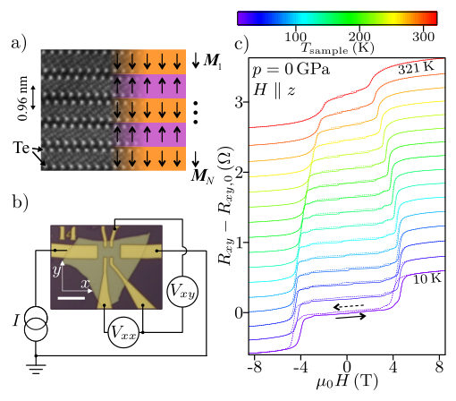
<figcaption class="paper-figure-caption"><b>Fig 1.</b> FIG. 1. a) Scanning transmission electron microscope image of a CFGT crystal. The brightest spots are Te atoms. The alternating magnetization in neighboring layers in the AFM state is illustrated. The thickness of a molecular layer and its magnetization are indicated. b) Optical image of 90-nm-thick sample A and a diagram of the measurement setup. The scale bar is 10 µm. c) The Hall resistance of the sample at a series of selected temperatures. Solid (dotted) lines indicate data for up (down) sweeps of the field. A zero-field value Rxy,0, which is a result of the mixing of a longitudinal voltage drop, has been removed. The curves are plotted with offsets that are proportional to T.</figcaption>
</figure>
<figure class="paper-figure-card">
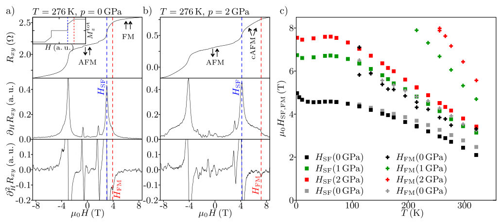
<figcaption class="paper-figure-caption"><b>Fig 2.</b> FIG. 2. a-b) Examples of the raw Hall data and its derivatives on sample A at 276 K as a function of increasing H at p = 0 and 2 GPa, respectively. The vertical blue and red lines mark the HSF and HFM fields, respectively. Arrows illustrate the AFM, canted AFM and FM phases. The peaks in the derivatives within the AFM phase are due to the steps of the small hystereses. Inset: simulation of the total out-of-plane magnetization using the two-sublattice model. c) The values of the HSF (solid squares) and the HFM (crosses) fields as a function of T at different pressures.</figcaption>
</figure>
<figure class="paper-figure-card">
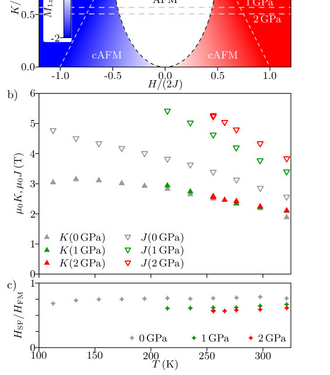
<figcaption class="paper-figure-caption"><b>Fig 3.</b> FIG. 3. a) Phase diagram of the two-sublattice system ac- cording to the numerically calculated global minimum of Eq. 1. The black dashed line shows the analytical first-order spin-flop/flip phase transition at ±HSF, given by Eq. 2a for K/J &lt; 1 and ±J for K/J &gt; 1. The white dashed lines are the second-order phase transition from the cAFM to the FM phase at ±HFM, from Eq. 2b. Both fields are rescaled by 2J. The grey dashed lines are the K/J values determined from ex- perimental HSF/HFM data for sample A at different pressures. b) The effective K (solid triangles) and J (empty triangles) values as a function of temperature, extracted using Eq. 2 and experimental HSF, HFM. c) The measured...</figcaption>
</figure>
<figure class="paper-figure-card">
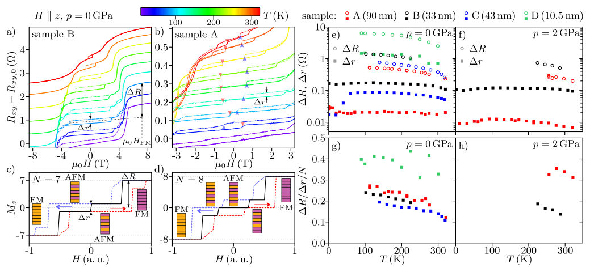
<figcaption class="paper-figure-caption"><b>Fig 4.</b> FIG. 4. a,b) Fine structure of the anomalous Hall resistance in the AFM phase in samples B and A, respectively. The step and small loop heights ∆R, ∆r are illustrated. In b), red and blue triangles highlight the coercive fields closest to H = 0 of the double hysteresis loops. c,d) Simulations of the magnetization Mz for 7 and 8 layers following the global energy minimum of Eq. 4 (black lines), and simulations following the local energy minima for up and down sweeps (red and blue dashed lines). Stacks of rectangles indicate the magnetization Miz of the individual layers in the global energy minimum at each H, with purple for positive and orange for negative. e,f) ∆R, ∆r in multiple samples...</figcaption>
</figure>
</div>

<p><strong>Summary.</strong> This work experimentally and theoretically investigates how hydrostatic pressure modifies the complex magnetic order of (Co$_{0.5}$Fe$_{0.5}$)$_5$GeTe$_2$. By analyzing magnetoresistance, the researchers quantified that pressure strongly enhances interlayer coupling while successfully modeling subtle AFM hysteresis using a linear chain approach, suggesting surface effects dominate over bulk FM coexistence.</p>
<p><strong>Why it may be interesting.</strong> The ability to tune magnetic interactions ($J$) by external pressure, combined with modeling layer-by-layer magnetism using concepts from quantum many-body physics (like chain models), provides insights into emergent quantum phenomena in 2D materials.</p>
<details>
<summary>Detailed structure</summary>
<p><strong>Main problem.</strong> The study investigates how external pressure tunes the magnetic properties of (Co$_{0.5}$Fe$_{0.5}$)$_5$GeTe$_2$, specifically focusing on understanding the nature of its magnetic order within the Antiferromagnetic (AFM) state.</p>
<p><strong>Main result.</strong> Applying pressure significantly enhances the interlayer exchange coupling ($J$) by about 50% at 2 GPa, and the small hysteresis loops observed in the AFM phase are explained by surface layer behavior modeled via a linear chain approach rather than coexisting ferromagnetic order.</p>
<p><strong>Method.</strong> The research combines magnetoresistance measurements (Hall effect) under varying pressures with theoretical modeling using both two-sublattice and linear chain models to extract magnetic parameters.</p>
<p><strong>Model / system.</strong> The physical system is the 2D magnet (Co$_{0.5}$Fe$_{0.5}$)$_5$GeTe$_2$. The analysis employs the two-sublattice model for bulk behavior and a linear chain model to describe layer-dependent phenomena, such as surface layer switching.</p>
<p><strong>Key observables.</strong> Magnetoresistance ($R_{xy}$) vs. magnetic field ($H$), Spin-flop transition field ($  ext{H}_{    ext{SF}}$), small hysteresis loops within the AFM state, and interlayer exchange coupling ($J$).</p>
<p><strong>Important parameters / regimes.</strong> Applied pressure ($p$) up to 2 GPa; anisotropy constant ($K$); interlayer exchange coupling ($J$); layer number ($N$).</p>
<p><strong>Assumptions / limitations.</strong> The small hysteresis loops are attributed solely to surface layer switching described by the linear chain model, avoiding the need for a coexisting FM phase. The analysis often involves fitting data using simplified two-sublattice approximations.</p>
<p><strong>Figures summary.</strong> Figures show SEM/optical images and $R_{xy}$ vs. $H$ curves at various pressures and temperatures; subsequent figures plot derived fields ($  ext{H}_{    ext{SF}}$) versus pressure or temperature, and analyze the ratio of hysteresis features ($\Delta R / \Delta r / N$).</p>
<p><strong>Paper structure.</strong> The paper progresses from presenting experimental measurements of magnetoresistance under pressure to applying theoretical models (two-sublattice and linear chain) to fit the data. It systematically analyzes phase transitions ($   ext{SF}$ vs $   ext{FM}$) and finally uses the chain model to explain fine details like small hysteresis loops.</p>
</details>
<details>
<summary>Abstract</summary>
<p>Cobalt-doped Fe$_5$GeTe$_2$ possesses a rich magnetic phase diagram as a function of Co concentration. The nature of magnetic order in (Co$_{0.5}$Fe$_{0.5}$)$_5$GeTe$_2$ is especially interesting, as it has been shown to exhibit ferromagnetic order, A-type antiferromagnetic (AFM) order, or potentially both at the same time. Here we present magnetoresistance measurements on antiferromagnetic (Co$_{0.5}$Fe$_{0.5}$)$_5$GeTe$_2$ at a series of pressures and extract the anisotropy and interlayer exchange fields using the two-sublattice model. We show a 50 % increase of the interlayer exchange at 2 GPa, highlighting the sensitivity of magnetic properties to interlayer distance. In addition, we find that the sharp hysteretic transitions observed within the AFM state can be qualitatively described by a linear chain model, which suggests an even-odd effect as a function of layer number instead of a coexisting ferromagnetic phase.</p>
</details>
<p><sub><a href="#top">↑ back to top</a></sub></p>

<p><a id="paper-2607.06303"></a></p>
<h3 id="from-valley-filtering-to-superconducting-diode-effect-in-spin-orbit-coupled-graphene-junctions"><a href="http://arxiv.org/abs/2607.06303v1">From Valley Filtering to Superconducting Diode Effect in Spin-Orbit Coupled Graphene Junctions</a></h3>
<p><strong>Authors:</strong> F. Bonasera, G. A. Falci, E. Paladino, F. M. D. Pellegrino<br>
<strong>Type:</strong> theory · <strong>Category:</strong> other · <strong>PDF:</strong> <a href="https://arxiv.org/pdf/2607.06303v1">https://arxiv.org/pdf/2607.06303v1</a><br>
<strong>Analysis basis:</strong> full PDF text, analyzed in chunks
<strong>Topic relevance:</strong> <code>spintronics-quantum-optics interface</code> <strong>3/5</strong> · <code>non-equilibrium dynamics</code> <strong>2/5</strong> · <code>Keldysh / 2PI / non-Gaussian methods</code> <strong>1/5</strong> · <code>driven-dissipative phase transition</code> <strong>1/5</strong> · <code>exotic spin models in light-matter</code> <strong>1/5</strong> · <code>methods for driven-dissipative</code> <strong>1/5</strong></p>
<div class="figure-strip-hint">↔ Scroll figures horizontally</div>
<div class="paper-figures-scroll">
<figure class="paper-figure-card">
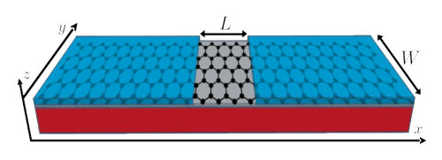
<figcaption class="paper-figure-caption"><b>Fig 1.</b> FIG. 1. Schematic of the system. A graphene Josephson junction consists of a graphene layer (gray) on a substrate (red), with superconducting electrodes (light blue) covering the |x| &gt; L/2 regions.</figcaption>
</figure>
<figure class="paper-figure-card">
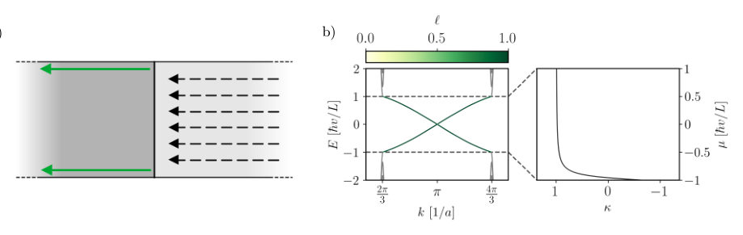
<figcaption class="paper-figure-caption"><b>Fig 2.</b> FIG. 2. a) schematic of a single junction where the left sector is made of zigzag graphene ribbon in the QSH phase with λKM = ℏv/L, and the right sector is made of pristine graphene with Fermi level µR = 0.2t; in green we highlighted the left-moving helical edge states, while the current is injected from the right sector and pictorially represented by black dashed arrows. The width of the junction is W = 295a. b) the left panel shows the electronic band structure of a QSH graphene ribbon, where the scale of greens represents the degree of localization of the helical edge states, as defined in Eqs. (12)-(13), and the dashed black horizontal lines highlight the energy gap; the energies are...</figcaption>
</figure>
<figure class="paper-figure-card">
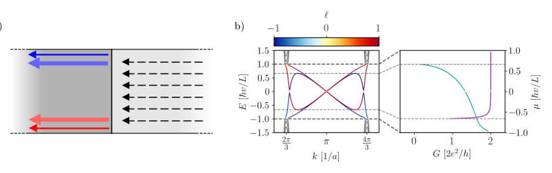
<figcaption class="paper-figure-caption"><b>Fig 3.</b> FIG. 3. a) schematic of a single junction where the left sector is made of a zigzag graphene ribbon in the QVSH phase with λVZ = ℏv/L and λR = 5 ℏv/L, in red (blue) the electron modes of the bottom (top) edge, with solid [pale] color indicating the pseudohelical [valley] edge states. The right sector is made of pristine graphene with Fermi level µR = 0.2t, and the current is injected from the right side and pictorially represented by black dashed arrows. The width of the junction is W = 295a. In b) the left panel shows the band structure of the QVSH phase graphene ribbon: the color scale indicates the degree of edge localization, defined in Eqs. (12) and (16), in red (blue) for the bottom...</figcaption>
</figure>
<figure class="paper-figure-card">
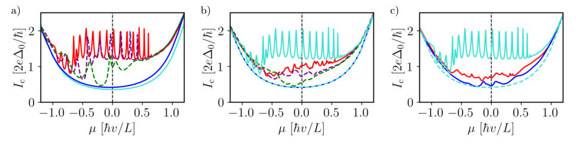
<figcaption class="paper-figure-caption"><b>Fig 4.</b> FIG. 4. a) critical current Ic (in units of 2e∆0/ℏ) of the GJJ as a function of the Fermi level µ (in units of ℏv/L) of the QVSH graphene region; the parameters used are λR = 5 ℏv/L, λVZ = ℏv/L and a junction length and width of L = 59a and W = 5L. In red the results for a pure zigzag ribbon with (m, n) = (1, 0), in purple (green) those for a (m, n) = (2, 1) ((m, n) = (1, 2)) termination and in blue the ones for a pure armchair ribbon, (m, n) = (0, 1). As a reference, we show in cyan the results of a previous work where the critical current is computed analytically using periodic boundary conditions [81], effectively corresponding to the limit of an infinite W. b) same as in a) but for...</figcaption>
</figure>
<figure class="paper-figure-card">
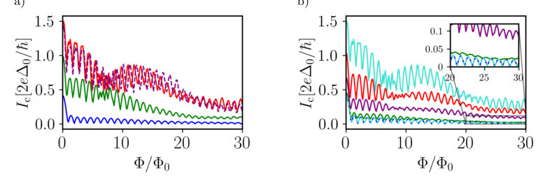
<figcaption class="paper-figure-caption"><b>Fig 5.</b> FIG. 5. Critical supercurrent Ic (in units of 2e∆0/ℏ) as a function of the magnetic flux Φ (in units of the superconducting magnetic flux quantum Φ0 = h/2e), produced by a perpendicular magnetic field threading the junction. The parameters used are λR = 5 ℏv/L, λVZ = ℏv/L, µ = 0 and a junction length and width of L = 59a and W = 5L. In a) we show the clean edge case with different edge terminations; in red the results for a pure zigzag ribbon with (m, n) = (1, 0), in purple (green) those for a (m, n) = (2, 1) ((m, n) = (1, 2)) termination, and in blue the ones for a pure armchair ribbon, (m, n) = (0, 1). In b) we show the same plot as in a) but for junction with disordered edges; in...</figcaption>
</figure>
</div>

<p><strong>Summary.</strong> This work theoretically examines spin-orbit coupled graphene junctions, demonstrating that the junction's edge structure dictates its transport properties. Key findings include robust valley filtering in the normal state and a significant Josephson Diode Effect (JDE) in the superconducting state due to broken mirror symmetry at zigzag edges. This highlights how engineered symmetries can control quantum electronic functionalities.</p>
<p><strong>Why it may be interesting.</strong> The strong dependence of macroscopic quantum effects (like SDE) on microscopic symmetries (edge termination leading to broken mirror symmetry) is highly relevant for designing novel quantum electronic devices.</p>
<details>
<summary>Detailed structure</summary>
<p><strong>Main problem.</strong> The study investigates transport properties, including valley filtering and superconducting diode effects, in graphene junctions that acquire spin-orbit coupling (SOC) via proximity to a substrate.</p>
<p><strong>Main result.</strong> The system exhibits strong non-reciprocal supercurrents leading to a significant Josephson Diode Effect (JDE), which is strongly dependent on the edge termination symmetry of the junction.</p>
<p><strong>Method.</strong> Theoretical analysis using tight-binding models solved in the ballistic and zero temperature limits, employing scattering formalism and analyzing Andreev Bound States (ABS).</p>
<p><strong>Model / system.</strong> The physical system is a graphene Josephson Junction (GJJ) where SOC is induced by proximity. The model uses a tight-binding Hamiltonian incorporating Rashba and intrinsic SOC terms.</p>
<p><strong>Key observables.</strong> Valley polarization ($\kappa$), supercurrent ($I(\phi)$), non-reciprocal supercurrent ($\Delta I_c$), and magnetic interference patterns.</p>
<p><strong>Important parameters / regimes.</strong> SOC strengths ($\lambda_R, \lambda_{VZ}$), junction width/length ratios, perpendicular magnetic field strength ($B$).</p>
<p><strong>Assumptions / limitations.</strong> Calculations are performed in the ballistic and short junction approximations at zero temperature.</p>
<p><strong>Figures summary.</strong> Figures illustrate band structures showing valley polarization gaps (QSH/QVSH phases) and show the dependence of valley polarization ($\kappa$) on junction length, alongside superconducting current analysis vs. magnetic flux.</p>
<p><strong>Paper structure.</strong> The paper progresses from analyzing normal state transport to demonstrate valley filtering in QSH/QVSH phases, and then extends this analysis to superconducting junctions to reveal non-reciprocal supercurrents causing the JDE.</p>
</details>
<details>
<summary>Abstract</summary>
<p>We study the transport properties of proximitized graphene, which can acquire a spin-orbit coupling by the proximity effect with a substrate. We focus on the ballistic and zero temperature limits, making use of a tight-binding procedure based on the KWANT Python package. We first find key results on valley-filtering properties and asymmetric edge transport in spin-orbit coupled graphene single junctions, and then move to the analysis of the superconducting transport in a graphene Josephson junction, in the short junction limit. We study the relative contribution of edge modes for different edge terminations and some degree of edge disorder, and also analyze the magnetic interference pattern that arises when threading the junction with a perpendicular magnetic field. We find residual supercurrent at high magnetic fluxes, due to the localized nature of transport in the junction, and a strong non-reciprocal transport that leads to a significant Josephson diode effect.</p>
</details>
<p><sub><a href="#top">↑ back to top</a></sub></p>

<p><a id="paper-2607.05912"></a></p>
<h3 id="interfacial-noncollinear-filtering-of-spin-hall-currents"><a href="http://arxiv.org/abs/2607.05912v1">Interfacial Noncollinear Filtering of Spin Hall Currents</a></h3>
<p><strong>Authors:</strong> Dan-Yang Han, Zi-An Wang, Hong-Liang Chen, Bo Li, Wen-Jian Lu, Yu-Ping Sun, Liang Liu, Shu-Hui Zhang, Ding-Fu Shao<br>
<strong>Type:</strong> theory · <strong>Category:</strong> other · <strong>PDF:</strong> <a href="https://arxiv.org/pdf/2607.05912v1">https://arxiv.org/pdf/2607.05912v1</a><br>
<strong>Analysis basis:</strong> full PDF text, analyzed in chunks
<strong>Topic relevance:</strong> <code>spintronics-quantum-optics interface</code> <strong>3/5</strong> · <code>non-equilibrium dynamics</code> <strong>2/5</strong> · <code>Keldysh / 2PI / non-Gaussian methods</code> <strong>1/5</strong> · <code>correlated / nonlocal dissipation</code> <strong>1/5</strong> · <code>driven-dissipative phase transition</code> <strong>1/5</strong> · <code>methods for driven-dissipative</code> <strong>1/5</strong></p>
<div class="figure-strip-hint">↔ Scroll figures horizontally</div>
<div class="paper-figures-scroll">
<figure class="paper-figure-card">
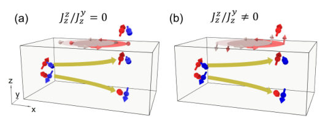
<figcaption class="paper-figure-caption"><b>Fig 1.</b> Fig. 1: Physical picture of interfacial noncollinear filtering of a spin Hall current. The yellow arrows indicate the flow direction of the bulk spin Hall current, while the large red and blue arrows denote spin Hall channels carrying different spin components. Although these channels may contain different spin directions, the symmetry-averaged bulk spin Hall current has only a net y-spin polarization. The top surface represents the emitting interface, where the small arrows on the Fermi surfaces denote the interfacial spin texture; its electric-field-induced nonequilibrium spin accumulation acts as the spin-orbit filtering field. (a) At a high-symmetry interface, the filtering field lies...</figcaption>
</figure>
<figure class="paper-figure-card">
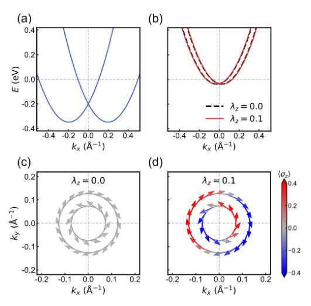
<figcaption class="paper-figure-caption"><b>Fig 2.</b> Fig. 2: Minimal model for interfacial noncollinear filtering. (a) Bulk band structure of the high-symmetry Dirac spin Hall source. (b) Interface dispersion for the conventional Rashba case and for the generalized Rashba model with finite 𝜆𝜆𝑧𝑧. (c) In-plane spin texture of the conventional Rashba interface. (d) Noncollinear interfacial spin texture generated by finite 𝜆𝜆𝑧𝑧.</figcaption>
</figure>
<figure class="paper-figure-card">
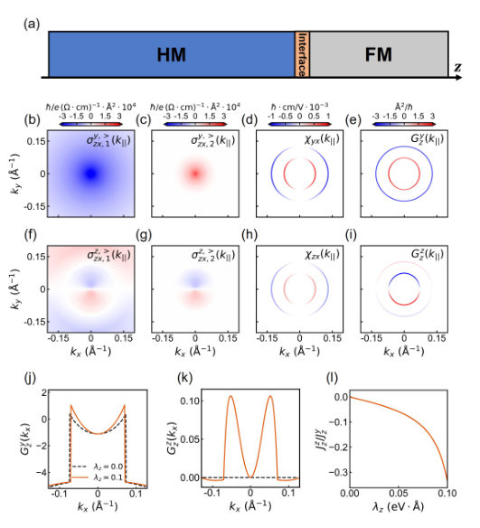
<figcaption class="paper-figure-caption"><b>Fig 3.</b> Fig. 3: Momentum-resolved generation of an unconventional emitted spin current by interfacial noncollinear filtering. (a) The schematic of a SOT device supporting interfacial noncollinear filtering. (b,c) k∥-resolved conventional spin Hall conductivity 𝜎𝜎𝑧𝑧𝑧𝑧,𝑛𝑛 𝑦𝑦,&gt; (k∥) for 𝑛𝑛=1 (b) and 𝑛𝑛=2 (c). (d) In-plane component 𝜒𝜒𝑦𝑦𝑦𝑦(k∥) of the interfacial spin-orbit filtering texture. (e) Momentum resolved contribution 𝐺𝐺𝑧𝑧 𝑦𝑦(k∥) to the emitted conventional spin current. (f,g) k∥-resolved unconventional spin Hall conductivity 𝜎𝜎𝑧𝑧𝑧𝑧,𝑛𝑛 𝑧𝑧,&gt; (k∥) for 𝑛𝑛=1 (f) and 𝑛𝑛=2 (g). (h) Out-of-plane component 𝜒𝜒𝑧𝑧𝑧𝑧(k∥) of the interfacial spin-orbit filtering texture. (i) Momentum resolved contribution...</figcaption>
</figure>
<figure class="paper-figure-card">
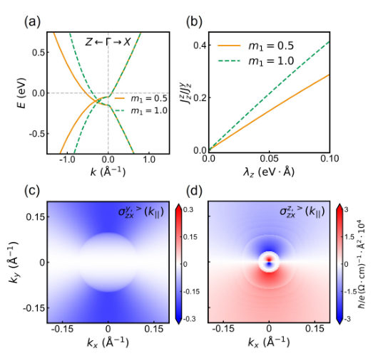
<figcaption class="paper-figure-caption"><b>Fig 4.</b> Fig. 4: Interfacial noncollinear filtering based on the Cd3As2 Hamiltonian. (a) Low-energy band structure of Cd3As2 for representative values of the mass parameter 𝑚𝑚1. Dirac points appear along the 𝛤𝛤–𝑍𝑍 direction, and the dispersion near the Dirac points is tuned by 𝑚𝑚1. (b) Emitted spin-current ratio 𝐽𝐽𝑧𝑧𝑧𝑧/𝐽𝐽𝑧𝑧 𝑦𝑦 as a function of the out-of-plane interfacial spin-orbit coupling 𝜆𝜆𝑧𝑧. The ratio increases nearly linearly with 𝜆𝜆𝑧𝑧 and is enhanced for larger 𝑚𝑚1. (c,d) k∥-resolved spin Hall conductivities 𝜎𝜎𝑧𝑧𝑧𝑧,𝑛𝑛 𝑦𝑦,&gt; (k∥) and 𝜎𝜎𝑧𝑧𝑧𝑧,𝑛𝑛 𝑧𝑧,&gt; (k∥). The hidden out-of- plane component is much larger than the conventional component near the Dirac points, providing an efficient k∥-resolved...</figcaption>
</figure>
</div>

<p><strong>Summary.</strong> This work introduces interfacial noncollinear filtering as a mechanism to reprogram spin-current polarization in spintronic materials. By treating the emitted current as a hybrid bulk-interface response, the authors show that even high-symmetry sources can generate unconventional out-of-plane spin currents if the interface possesses sufficient low symmetry. This shifts control from intrinsic material symmetry to engineered interfacial quantum selection.</p>
<p><strong>Why it may be interesting.</strong> While focused on condensed matter transport, the concept of engineered boundary conditions controlling quantum response echoes principles used in open quantum systems where environment coupling dictates observable dynamics.</p>
<details>
<summary>Detailed structure</summary>
<p><strong>Main problem.</strong> The conventional view treats Spin Hall currents as bulk responses constrained by crystal symmetry, limiting the achievable spin polarization direction.</p>
<p><strong>Main result.</strong> Interfacial noncollinear filtering allows for generating unconventional emitted spin currents from high-symmetry sources by selectively transmitting hidden momentum-resolved spin components at the interface.</p>
<p><strong>Method.</strong> The authors establish the emitted spin current as a bulk–interface hybrid response, modeling the effect using interfacial spin-orbit fields that impose spin-dependent transmission probabilities.</p>
<p><strong>Model / system.</strong> The study analyzes heterostructures involving high-symmetry spin sources (like Dirac semimetals) coupled to low-symmetry interfaces, modeled using effective Hamiltonians incorporating Rashba-type coupling terms.</p>
<p><strong>Key observables.</strong> Emitted out-of-plane spin current ($J_{zzz}$), the ratio $J_z/J_y$, and $\mathbf{k}_{\|}$-resolved hidden spin Berry-curvature components ($\Omega$).</p>
<p><strong>Important parameters / regimes.</strong> The strength of the interfacial low-symmetry coupling ($\lambda_z$) is crucial, as it breaks symmetry and enables the unconventional current.</p>
<p><strong>Assumptions / limitations.</strong> The emitted current is treated as a hybrid response combining bulk texture and interfacial transmission; analysis often focuses on states with positive group velocity normal to the interface.</p>
<p><strong>Figures summary.</strong> Figures illustrate that low-symmetry interfaces lead to noncollinear filtering, resulting in finite out-of-plane spin currents ($J_{zzz} 
eq 0$), whereas high symmetry leads to cancellation ($J_{zzz}=0$).</p>
<p><strong>Paper structure.</strong> The paper progresses from identifying the limitation of bulk symmetry constraints to proposing the hybrid bulk-interface mechanism. It develops models using minimal and realistic Dirac semimetal systems to calculate how interfacial coupling selectively transmits hidden spin components, demonstrating a quantitative increase in unconventional current with interface asymmetry.</p>
</details>
<details>
<summary>Abstract</summary>
<p>Spin Hall currents generated in nonmagnetic materials are conventionally regarded as bulk responses whose polarization is fixed by crystal symmetry. This view has motivated the search for intrinsically low-symmetry spin sources when unconventional spin polarizations are required. Here we point out that, in realistic heterostructures, the device-relevant quantity is not the fully symmetry-averaged bulk spin Hall current, but the emitted spin current transmitted across the interface. We therefore establish emitted spin currents as bulk-interface hybrid responses and propose interfacial noncollinear filtering as a mechanism to bypass the bulk-symmetry constraint. A low-symmetry interfacial spin-orbit field, generally noncollinear with the momentum-resolved spin polarization of the incident spin Hall current, imposes spin-dependent transmission and converts hidden momentum-resolved spin-polarization components into an observable unconventional emitted spin current. Using both a rotationally symmetric minimal model and a realistic high-symmetry Dirac-semimetal model, we show that conventional spin Hall sources can emit sizable out-of-plane spin currents when their hidden bulk spin Hall textures are selectively transmitted by the interfacial spin-orbit field. Our results reveal that spin-current polarization emerges from the cooperative action of bulk and interfacial responses, providing a strategy for reprogramming spin-current polarization in high-efficiency, CMOS-compatible spin Hall materials without relying on intrinsically low-symmetry bulk crystals or external symmetry-breaking schemes.</p>
</details>
<p><sub><a href="#top">↑ back to top</a></sub></p>

<p><a id="paper-2607.06159"></a></p>
<h3 id="layer-selective-chirality-switch-in-bilayer-graphene-intercalated-by-janus-monolayers"><a href="http://arxiv.org/abs/2607.06159v1">Layer-selective chirality switch in bilayer graphene intercalated by Janus monolayers</a></h3>
<p><strong>Authors:</strong> Marko Milivojević<br>
<strong>Type:</strong> theory · <strong>Category:</strong> other · <strong>PDF:</strong> <a href="https://arxiv.org/pdf/2607.06159v1">https://arxiv.org/pdf/2607.06159v1</a><br>
<strong>Analysis basis:</strong> full PDF text, analyzed in chunks
<strong>Topic relevance:</strong> <code>spintronics-quantum-optics interface</code> <strong>3/5</strong> · <code>Kondo &amp; dissipative impurity</code> <strong>1/5</strong> · <code>analog quantum simulation</code> <strong>1/5</strong> · <code>exotic spin models in light-matter</code> <strong>1/5</strong> · <code>non-equilibrium dynamics</code> <strong>1/5</strong></p>
<div class="figure-strip-hint">↔ Scroll figures horizontally</div>
<div class="paper-figures-scroll">
<figure class="paper-figure-card">
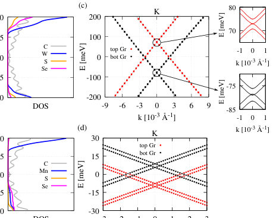
<figcaption class="paper-figure-caption"><b>Fig 1.</b> Figure 2. Atom-projected density of states of (a) Gr/WSSe/Gr and (b) Gr/MnSSe/Gr heterostructures. In both cases, the carbon states reside inside the semiconduct- ing gap of the Janus monolayer, confirming the absence of hybridization between graphene and substrate states near the Fermi level. Layer-resolved fatband structure of (c) Gr/WSSe/Gr and (d) Gr/MnSSe/Gr in the vicinity of the K point, with the top (red) and bottom (black) graphene layer contributions given. The inset in (c) shows a zoom around the Dirac points of both the top and bottom graphene lay- ers, showing spin splitting due to proximity-induced spin-orbit coupling.</figcaption>
</figure>
<figure class="paper-figure-card">
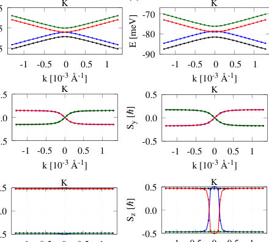
<figcaption class="paper-figure-caption"><b>Fig 2.</b> Figure 3. Comparison of the DFT electronic band structure and spin expectation values Sy and Sz near the Dirac K point with the tight-binding model Hamiltonian (6) for the top (a) and bottom (b) graphene layers within the Gr/WSSe/Gr het- erostructure. The tight-binding parameters are given in Ta- ble I. Solid lines represent the tight-binding fit, while circles denote DFT data. The k-path is taken along the kx direction (ky = 0), centered at the K point. By symmetry, Sx vanishes along this path.</figcaption>
</figure>
<figure class="paper-figure-card">
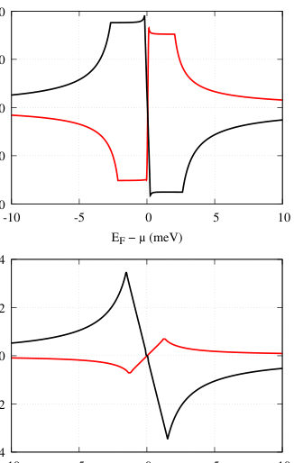
<figcaption class="paper-figure-caption"><b>Fig 3.</b> Figure 5. Calculated dependence of the conventional Rashba–Edelstein charge-to-spin conversion efficiency param- eter αREE as a function of doping for both top and bottom graphene within the (a) Gr/WSSe/Gr and (b) Gr/MnSSe/Gr heterostructures.</figcaption>
</figure>
</div>

<p><strong>Summary.</strong> This theoretical study predicts that sandwiching bilayer graphene between Janus monolayers like WSSe or MnSSe creates a platform for advanced spintronics. The key mechanism involves the monolayer inducing opposite signs of Rashba SOC in the top and bottom layers, allowing researchers to independently switch spin current directions by applying gate voltages.</p>
<p><strong>Why it may be interesting.</strong> While focused on condensed matter spintronics, the concept of using engineered interfaces (Janus materials) to induce controllable, layer-specific spin-orbit coupling is relevant to understanding topological phenomena in low-dimensional quantum systems.</p>
<details>
<summary>Detailed structure</summary>
<p><strong>Main problem.</strong> The goal is to design gate-tunable, layer-selective spintronic devices by independently controlling the spin current direction in the top and bottom layers of bilayer graphene.</p>
<p><strong>Main result.</strong> Intercalating bilayer graphene with Janus monolayers (WSSe or MnSSe) induces opposite signs of proximity-induced Rashba SOC in each layer, enabling independent control over spin currents via electrostatic gating.</p>
<p><strong>Method.</strong> The study uses first-principles DFT calculations to derive parameters for an effective tight-binding model, followed by linear response theory and Rashba-Edelstein conversion calculations.</p>
<p><strong>Model / system.</strong> The system is bilayer graphene ($   ext{Gr}$) sandwiched between a Janus monolayer ($ ext{WSSe}$ or $ ext{MnSSe}$). The low-energy physics is modeled using two independent, proximitized graphene layers described by effective Hamiltonians incorporating orbital, intrinsic SOC, and Rashba SOC terms.</p>
<p><strong>Key observables.</strong> Rashba-Edelstein coefficient ($\alpha_{	ext{REE}}$), spin current direction, layer-resolved band structure, and chemical potential shifts.</p>
<p><strong>Important parameters / regimes.</strong> The proximity-induced Rashba SOC signs, the exchange coupling parameters ($\Delta_A, \Delta_B$) for magnetic cases, and gate voltages applied to individual layers.</p>
<p><strong>Assumptions / limitations.</strong> The low-energy physics is assumed to be described by two independent graphene layers due to the decoupling effect; the $ ext{MnSSe}$ magnetic configuration uses an out-of-plane antiferromagnetic model case.</p>
<p><strong>Figures summary.</strong> Figure 1 schematically shows how a charge current generates spin accumulations in opposite directions. Figure 2 confirms decoupled Dirac cones and layer-resolved band structures for both heterostructures.</p>
<p><strong>Paper structure.</strong> The paper proceeds by establishing the physical system (Janus intercalation), deriving effective Hamiltonians incorporating proximity effects, calculating key transport coefficients like $\alpha_{	ext{REE}}$, and demonstrating that opposite SOC signs lead to independent spin current control via gating.</p>
</details>
<details>
<summary>Abstract</summary>
<p>We predict that intercalating bilayer graphene with nonmagnetic WSSe or magnetic MnSSe Janus monolayers induces a layer-selective switch of the in-plane Rashba spin texture, resulting in opposite spin current directions in the top and bottom graphene layers. First-principles calculations reveal that both Janus monolayers decouple the two graphene layers while simultaneously inducing opposite signs of the proximity-induced Rashba spin-orbit coupling in each. Tight-binding modeling of the proximitized layers, combined with Rashba-Edelstein charge-to-spin conversion calculations, confirms that the spin current direction can be independently controlled by gating the top or bottom graphene layer. Bilayer graphene intercalated by Janus monolayers thus represents a promising platform for gate-tunable, layer-selective spintronic devices.</p>
</details>
<p><sub><a href="#top">↑ back to top</a></sub></p>

<p><a id="paper-2607.05616"></a></p>
<h3 id="raman-spectroscopy-of-the-van-der-waals-altermagnet-comath1091mathnbsemath1092math"><a href="http://arxiv.org/abs/2607.05616v1">Raman spectroscopy of the van der Waals altermagnet Co$_{1/4}$NbSe$_2$</a></h3>
<p><strong>Authors:</strong> Dushyanthini Balasundaram, Bishal Thapa, Resham Regmi, Nirmal J. Ghimire, Igor I. Mazin, Patrick M. Vora<br>
<strong>Type:</strong> both · <strong>Category:</strong> other · <strong>PDF:</strong> <a href="https://arxiv.org/pdf/2607.05616v1">https://arxiv.org/pdf/2607.05616v1</a><br>
<strong>Analysis basis:</strong> full PDF text, analyzed in chunks
<strong>Topic relevance:</strong> <code>exotic spin models in light-matter</code> <strong>3/5</strong> · <code>spintronics-quantum-optics interface</code> <strong>3/5</strong></p>
<div class="figure-strip-hint">↔ Scroll figures horizontally</div>
<div class="paper-figures-scroll">
<figure class="paper-figure-card">
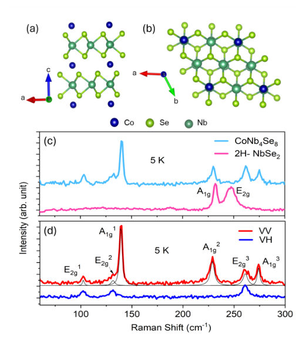
<figcaption class="paper-figure-caption"><b>Fig 1.</b> FIG. 1. Lattice structure of Co1/4NbSe2 viewed along the (a) b axis and (b) c axis. (c) 5 K unpolarized Raman spectra for Co1/4NbSe2 and NbSe2 illustrating the impact of Co inter- calation. (d) 5 K polarized Raman spectra for Co1/4NbSe2 in the VV and VH configurations. These data facilitate the identification of mode symmetry as E2g modes are visible in both VV and VH, but A1g is only active in VV.</figcaption>
</figure>
<figure class="paper-figure-card">
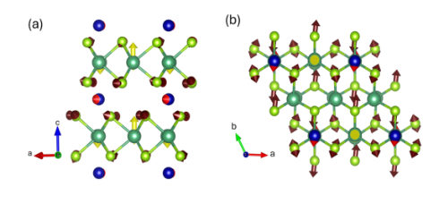
<figcaption class="paper-figure-caption"><b>Fig 2.</b> FIG. 2. E2u phonon mode exhibiting the vibration associated with the Co superlattice at 133 cm−1 along the a) b-axis and b) c-axis.</figcaption>
</figure>
<figure class="paper-figure-card">
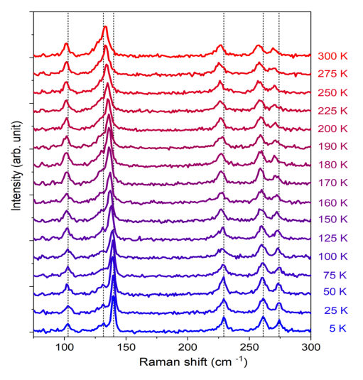
<figcaption class="paper-figure-caption"><b>Fig 3.</b> FIG. 3. Temperature evolution of Raman spectra from 5 K to 300 K, offset for clarity.</figcaption>
</figure>
<figure class="paper-figure-card">
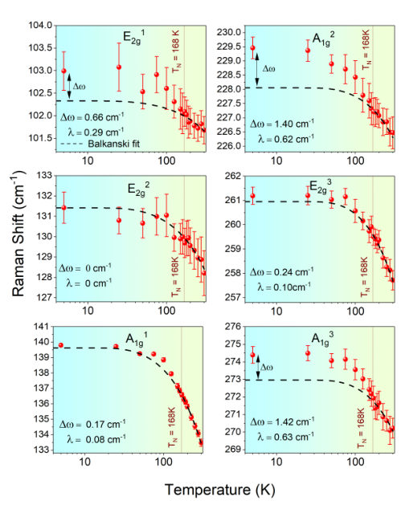
<figcaption class="paper-figure-caption"><b>Fig 4.</b> FIG. 4. Temperature dependence of Raman frequency shifts for different phonon modes of Co1/4NbSe2. Dashed lines show fits using the Balkanski anharmonic model in Eq. (6). ∆ω values are obtained as described in the text</figcaption>
</figure>
</div>

<p><strong>Summary.</strong> The study uses advanced Raman spectroscopy and DFT calculations to characterize the vibrational properties of the altermagnetic material $ ext{Co}_{1/4}   ext{NbSe}_2$. It reveals that Co intercalation reconstructs the phonon spectrum while confirming the existence of spin-phonon coupling in specific modes. This work advances understanding of how magnetic ordering influences lattice dynamics in transition metal dichalcogenides.</p>
<p><strong>Why it may be interesting.</strong> This work provides a detailed spectroscopic probe into emergent magnetic phenomena (altermagnetism) in 2D materials, linking electronic order directly to lattice vibrations via measurable Raman shifts. This type of magneto-vibrational coupling is highly relevant for designing novel quantum materials.</p>
<details>
<summary>Detailed structure</summary>
<p><strong>Main problem.</strong> The study investigates how Co intercalation and altermagnetic ordering affect the lattice dynamics of the layered van der Waals material $    ext{Co}_{1/4}   ext{NbSe}_2$. The goal is to identify vibrational signatures and evidence for spin-phonon coupling.</p>
<p><strong>Main result.</strong> Intercalation causes significant reconstruction of the phonon spectrum via zone folding, while temperature measurements reveal indirect spin-phonon coupling in specific $ ext{A}_{1g}$ symmetry modes. Furthermore, Co atoms do not contribute to any Raman-active modes by symmetry.</p>
<p><strong>Method.</strong> The research combines polarization-resolved Raman spectroscopy with Density Functional Theory (DFT) calculations to model phonon dispersion and analyze temperature dependence across the altermagnetic transition.</p>
<p><strong>Model / system.</strong> The physical system is $    ext{Co}_{1/4}   ext{NbSe}_2$, an altermagnet, which is a layered van der Waals material. The analysis models lattice vibrations using DFT for various magnetic states (NM, FM, AFM) and examines temperature evolution via the Balkanski anharmonic model.</p>
<p><strong>Key observables.</strong> Raman-active phonon frequencies ($ ext{cm}^{-1}$), mode symmetry ($    ext{A}<em 2g>{1g},    ext{E}</em>$, etc.), spectral weight changes due to zone folding, and spin-phonon coupling constants ($\lambda$).</p>
<p><strong>Important parameters / regimes.</strong> Altermagnetic transition temperature ($T_N \approx 168 	ext{ K}$), magnetic moment ($\mu_B$), and the coupling constant $\lambda$.</p>
<p><strong>Assumptions / limitations.</strong> The analysis assumes that spin-phonon coupling can be quantified by analyzing frequency shifts ($\Delta\omega$) relative to zero-temperature fits, despite the itinerant nature of Co electrons.</p>
<p><strong>Figures summary.</strong> Figures illustrate lattice structures, polarization-resolved Raman spectra showing selection rules, and temperature evolution plots demonstrating phonon frequency shifts across multiple samples.</p>
<p><strong>Paper structure.</strong> The paper systematically presents structural details, analyzes the spectral reconstruction due to intercalation using DFT calculations for various symmetry modes, examines temperature dependence relative to $T_N$, and finally quantifies spin-phonon coupling constants ($\lambda$) based on mode eigenvectors.</p>
</details>
<details>
<summary>Abstract</summary>
<p>We investigate the influence of Co intercalation and altermagnetic order on the lattice dynamics of the layered compound Co$_{1/4}$NbSe$_2$. Polarization-resolved Raman spectroscopy, supported by density-functional theory, enables identification of six Raman-active phonons. Co intercalation drives a substantial reconstruction of the vibrational spectrum through zone folding of NbSe$_2$ phonons, producing hybridized modes with mixed zone-center and zone-boundary character. Despite this, Co atoms do not participate in any Raman-active modes by symmetry, which is in marked contrast to related 1/3 compounds where intercalant modes do contribute to the Raman spectrum. Temperature-dependent Raman measurements across the altermagnetic transition show no discontinuities, which is consistent with short-range spin correlations in the quasi-one-dimensional Co chains. However, we find evidence for spin-phonon coupling in A$_{1g}$ symmetry modes owing to their out-of-plane Se displacements. Our work demonstrates the substantial impact of intercalation on the vibrational properties of transition metal dichalcogenides and the presence of spin-phonon interactions in a newly discovered altermagnetic material.</p>
</details>
<p><sub><a href="#top">↑ back to top</a></sub></p>

<p><a id="paper-2607.05890"></a></p>
<h3 id="microscopic-theory-of-the-lower-critical-field-in-superconducting-thin-film-strips"><a href="http://arxiv.org/abs/2607.05890v1">Microscopic theory of the lower critical field in superconducting thin-film strips</a></h3>
<p><strong>Authors:</strong> Takayuki Kubo<br>
<strong>Type:</strong> theory · <strong>Category:</strong> other · <strong>PDF:</strong> <a href="https://arxiv.org/pdf/2607.05890v1">https://arxiv.org/pdf/2607.05890v1</a><br>
<strong>Analysis basis:</strong> full PDF text, analyzed in chunks
<strong>Topic relevance:</strong> <code>Keldysh / 2PI / non-Gaussian methods</code> <strong>3/5</strong> · <code>driven-dissipative phase transition</code> <strong>1/5</strong> · <code>methods for driven-dissipative</code> <strong>1/5</strong></p>
<div class="figure-strip-hint">↔ Scroll figures horizontally</div>
<div class="paper-figures-scroll">
<figure class="paper-figure-card">
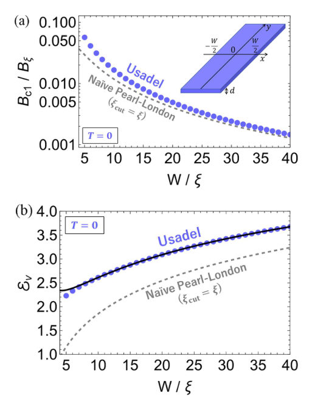
<figcaption class="paper-figure-caption"><b>Fig 1.</b> FIG. 1. (a) Lower critical field Bc1 of a narrow dirty su- perconducting strip at T = 0, normalized by Bξ := φ0/ξ2, as a function of w := W/ξ. Blue symbols show the self- consistent two-dimensional Usadel results. The gray dashed curve is the naive Pearl-London estimate with ξcut = ξ. (b) The same data expressed as the vortex self-energy factor Ev, defined by Bc1 = (2φ0/πW 2)Ev. The gray dashed curve is the naive Pearl-London estimate, E L v = ln[2w/π]. The black curve is a Pearl–London-type fit, E fit v = ln[2w/(πc1)] + c2/w, with w = W/ξ. Equivalently, this fit can be written in the Pearl–London form by introducing a width-dependent cutoff ξcut = c1ξ exp(−c2/w).</figcaption>
</figure>
<figure class="paper-figure-card">
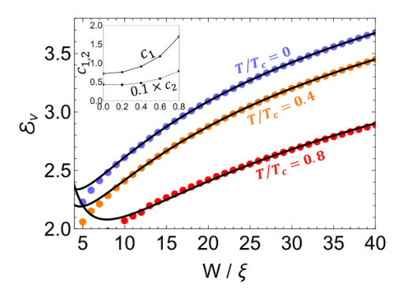
<figcaption class="paper-figure-caption"><b>Fig 2.</b> FIG. 2. Finite-temperature behavior of the vortex self- energy factor Ev. Symbols are the self-consistent two- dimensional Usadel results for T/Tc = 0, 0.4, and 0.8, from top to bottom. The horizontal axis is w := W/ξ, where ξ = p</figcaption>
</figure>
</div>

<p><strong>Summary.</strong> This paper provides a microscopic theory for calculating the lower critical magnetic field (B_c1) in superconducting thin films by solving the 2D Usadel equations. It overcomes limitations of older models by self-consistently resolving the vortex core structure, demonstrating that the resulting energy scale differs significantly from simple London predictions. This work establishes a robust theoretical basis for predicting superconducting behavior in nanoscale devices across various temperatures.</p>
<p><strong>Why it may be interesting.</strong> While focused on superconductivity, the rigorous application of advanced continuum field theories (Usadel equations) to resolve fundamental physical quantities like core structure without ad-hoc cutoffs is a valuable methodological contribution applicable to other strongly coupled quantum systems where approximations are common.</p>
<details>
<summary>Detailed structure</summary>
<p><strong>Main problem.</strong> The primary goal is to develop a microscopic theory for determining the lower critical field (B_c1) in superconducting thin-film strips, addressing shortcomings in standard phenomenological models.</p>
<p><strong>Main result.</strong> The microscopic calculation resolves the vortex core structure without needing an arbitrary cutoff, showing that the resulting vortex self-energy significantly deviates from naive Pearl-London estimates.</p>
<p><strong>Method.</strong> The authors solve the two-dimensional Usadel equations self-consistently for both vortex and Meissner states at fixed magnetic fields to calculate B_c1 via Gibbs energy differences.</p>
<p><strong>Model / system.</strong> The system is a narrow superconducting thin-film strip. The theory uses the dirty limit approximation solved via 2D Usadel equations, incorporating the applied magnetic field directly into the momentum terms.</p>
<p><strong>Key observables.</strong> Lower critical field (B_c1), dimensionless vortex self-energy factor (E_v), and edge barrier field (B_s).</p>
<p><strong>Important parameters / regimes.</strong> Dirty-limit coherence length (xi), Pearl length (Lambda), normalized strip width (w = W/xi), and temperature (T &lt; Tc).</p>
<p><strong>Assumptions / limitations.</strong> The film is assumed thin enough that superconducting parameters are uniform across the thickness dimension; magnetic screening by the strip itself is neglected.</p>
<p><strong>Figures summary.</strong> Figure 1 compares self-consistent Usadel results for B_c1 vs. width (w) against the naive Pearl-London estimate. Figure 2 shows the temperature dependence of E_v, comparing Usadel results to empirical fits derived from the theory.</p>
<p><strong>Paper structure.</strong> The paper establishes the physical problem and limitations of existing theories; it then details the microscopic framework using the Usadel equations solved self-consistently for vortex/Meissner states; finally, it presents quantitative comparisons showing the deviation from simple London models across varying temperatures and widths.</p>
</details>
<details>
<summary>Abstract</summary>
<p>The lower critical field \(B_{c1}\) of a narrow superconducting thin-film strip sets the thermodynamic scale for vortex-free operation in a perpendicular magnetic field. The standard Pearl--London estimate requires a phenomenological vortex-core cutoff, because the London theory does not resolve the core. We formulate a microscopic theory for a dirty strip by solving the two-dimensional Usadel equations in the film plane, with the applied field included directly in the gauge-invariant momentum. Self-consistent vortex and Meissner solutions are computed at fixed field, and \(B_{c1}\) is obtained from their Gibbs-energy difference. The calculation resolves the vortex core and its finite-width deformation without introducing a cutoff. The resulting vortex self-energy is larger than the naive Pearl--London estimate and cannot, in general, be represented by a London logarithm with a single width-independent cutoff. The formulation applies at any \(T<T_c\) and provides a microscopic basis for predicting \(B_{c1}\) in superconducting nanostrips and related thin-film devices.</p>
</details>
<p><sub><a href="#top">↑ back to top</a></sub></p>

<p><a id="paper-2607.06510"></a></p>
<h3 id="sedimentation-equilibrium-and-gravity-dependent-stiffness-coefficients-of-colloidal-hard-spheres"><a href="http://arxiv.org/abs/2607.06510v1">Sedimentation equilibrium and gravity dependent stiffness coefficients of colloidal hard-spheres</a></h3>
<p><strong>Authors:</strong> Luis G. MacDowell, Eva G. Noya<br>
<strong>Type:</strong> both · <strong>Category:</strong> statistical mechanics · <strong>PDF:</strong> <a href="https://arxiv.org/pdf/2607.06510v1">https://arxiv.org/pdf/2607.06510v1</a><br>
<strong>Analysis basis:</strong> full PDF text, analyzed in chunks
<strong>Topic relevance:</strong> <code>non-equilibrium dynamics</code> <strong>2/5</strong> · <code>analog quantum simulation</code> <strong>1/5</strong> · <code>driven-dissipative phase transition</code> <strong>1/5</strong> · <code>methods for driven-dissipative</code> <strong>1/5</strong> · <code>non-equilibrium universality</code> <strong>1/5</strong></p>
<div class="figure-strip-hint">↔ Scroll figures horizontally</div>
<div class="paper-figures-scroll">
<figure class="paper-figure-card">
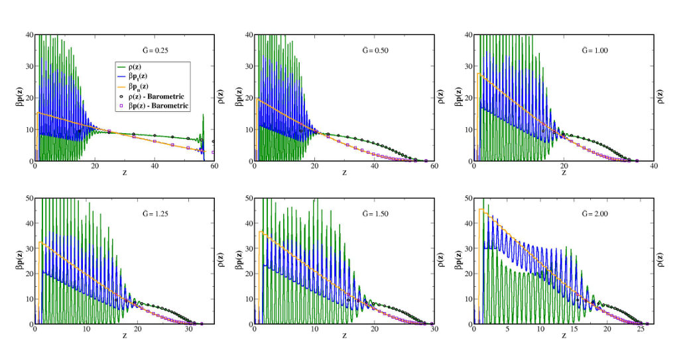
<figcaption class="paper-figure-caption"><b>Fig 1.</b> FIG. 1. Pressure and density profiles. The black and orange lines are the zz component of the pressure tensor by IK and MOP methods, which overlap one on top of the other. The red and blue are xx and yy components, which also overlap. Oscillations about the zz component suggest equilibrium. The system always crystallizes very close to the intersection of pzz(z) with the equilibrium coexistence pressure, as displayed by the dashed black line in the figures for βpσ3 = 11.65, the estimated coexistence pressure of PHS.</figcaption>
</figure>
<figure class="paper-figure-card">
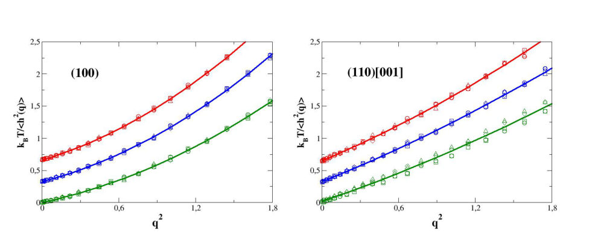
<figcaption class="paper-figure-caption"><b>Fig 2.</b> FIG. 2. Capillary wave spectrum for interfaces under gravity. Results are shown for surface fluctuations on the (100) interface (left) and the (110) interface along the [001] direction (right), with ˜G = 0 (green), ˜G = 0.75 (blue) and ˜G = 1.50 (red). The symbols are average simulation results from four independent runs. The lines are fits to the 20 first wave-vectors to Eq.6. For ease of view, the results for ˜G = 0.75 and ˜G = 1.5 are shifted by 0.25 and 0.50 along the y axis, respectively.</figcaption>
</figure>
<figure class="paper-figure-card">
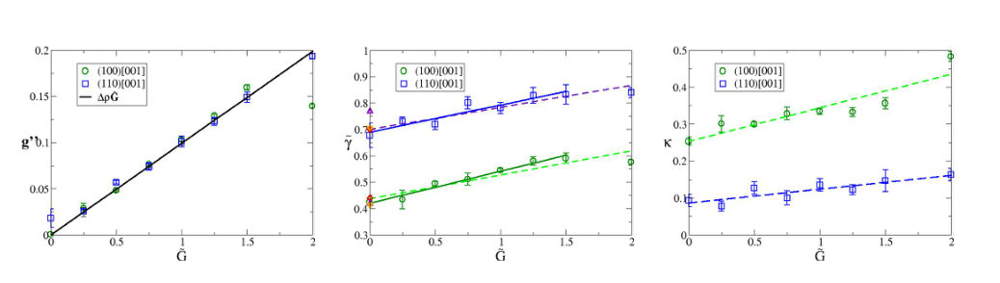
<figcaption class="paper-figure-caption"><b>Fig 3.</b> FIG. 3. Coefficients of the spectrum of fluctuations as obtained form simulation. Results for the (100)[001] direction are shown as circles, while those for the (100)[001] direction are shown as squares. For g′′, the line corresponds to the prediction g′′ = ∆ρ ˜G from capillary wave theory with no fitting parameters. For the other figures, lines are linear fits to the data. The middle panel also shows stiffness coefficients in zero gravity obtained from Ref.45 (red diamons), Ref.47 (violet triangles up) and Ref.51 (orange triangles down).</figcaption>
</figure>
<figure class="paper-figure-card">
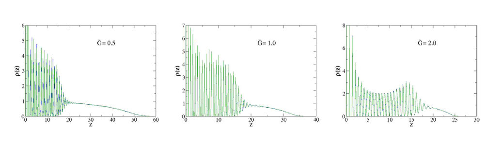
<figcaption class="paper-figure-caption"><b>Fig 4.</b> FIG. 4. Comparison of density profiles for HS and p-HS. Bluelines are density profiles from the pseudo-Hard Spheres, simulated by MD with Lammps. Green lines are results for HS, simulated with MC. The results do not show any difference in the scale of the plot.</figcaption>
</figure>
</div>

<p><strong>Summary.</strong> This work investigates the interfacial properties of colloidal hard spheres under gravity, focusing on a discrepancy in the crystal-melt stiffness coefficient. Using computer simulations, the authors demonstrate that this missing physics arises from an explicit, previously overlooked dependence of the stiffness coefficient on the external gravitational field. This provides a general result for how external fields affect interface thermodynamics.</p>
<p><strong>Why it may be interesting.</strong> While focused on classical colloidal systems, the rigorous treatment of external field effects (gravity) modifying fundamental thermodynamic coefficients like stiffness is relevant to understanding non-equilibrium or externally driven many-body dynamics.</p>
<details>
<summary>Detailed structure</summary>
<p><strong>Main problem.</strong> The study addresses an enigmatic discrepancy concerning the crystal-melt stiffness coefficient of colloidal hard spheres, particularly when external gravity is considered.</p>
<p><strong>Main result.</strong> The authors show that this long-standing discrepancy can be traced to a previously unrecognized, explicit dependence of the interfacial stiffness coefficient on the applied gravitational field.</p>
<p><strong>Method.</strong> Computer simulations (Monte Carlo) are used to calculate density profiles and analyze the capillary wave spectrum at fluid-crystal interfaces under tunable buoyant mass and gravity.</p>
<p><strong>Model / system.</strong> The system modeled is colloidal hard spheres, which serve as an experimental analog for studying bulk and interfacial properties of simple fluids undergoing phase transitions into crystalline solids.</p>
<p><strong>Key observables.</strong> Interfacial stiffness coefficient ($   ilde{\gamma}$), density profiles ($
ho(z)$), pressure tensor components ($P_{zz}, P_{xx}, P_{yy}$), and the mean squared amplitude of surface Fourier modes ($\langle h^2_q 
angle$).</p>
<p><strong>Important parameters / regimes.</strong> Buoyant mass, external gravity ($   ilde{G}$), reduced temperature/pressure parameters (e.g., $eta p\sigma^3 = 11.65$).</p>
<p><strong>Assumptions / limitations.</strong> The analysis relies on relating interfacial properties to the capillary wave spectrum and uses simplified ansätze for density profiles in some theoretical derivations.</p>
<p><strong>Figures summary.</strong> Figures illustrate density and pressure profiles showing stratification due to gravity, and compare simulated vs. fitted capillary wave spectra across varying gravity strengths ($    ilde{G}$).</p>
<p><strong>Paper structure.</strong> The paper progresses from establishing the physical model (colloidal hard spheres) and identifying the discrepancy, through detailed simulation analysis of equilibrium states under gravity, culminating in deriving the functional form showing $    ilde{\gamma}$'s dependence on $ ilde{G}$.</p>
</details>
<details>
<summary>Abstract</summary>
<p>Spherical colloids with harsh repulsive forces have long been used as experimental analogs of the hard sphere model, with demonstrated good agreement with computer simulations for bulk and structural properties of the fluid, glass and crystal phases. However, an enigmatic discrepancy remains for the crystal-melt stiffness coefficient. Here we perform computer simulations of colloidal hard spheres under tunable buoyant mass and show that the long-standing discrepancy can be traced to a hitherto unrecognized gravity dependent contribution of the stiffness coefficient. This effect is one practical realization of a more general result for the external field dependence of stiffness coefficients of arbitrary interfaces.</p>
</details>
<p><sub><a href="#top">↑ back to top</a></sub></p>

<p><a id="paper-2607.06304"></a></p>
<h3 id="decoupling-josephson-coupling-and-supercurrent-nonreciprocity-in-twisted-nbse2nbse2-van-der-waals-junctions"><a href="http://arxiv.org/abs/2607.06304v1">Decoupling Josephson Coupling and Supercurrent Nonreciprocity in Twisted NbSe2/NbSe2 van der Waals Junctions</a></h3>
<p><strong>Authors:</strong> Seung-Gi Lee, Kwon-Neong Jung, Jae-Kuen Kim, Jae-Chun Jeon, Jiho Yoon, Stuart S. P. Parkin, Kun-Rok Jeon<br>
<strong>Type:</strong> experiment · <strong>Category:</strong> other · <strong>PDF:</strong> <a href="https://arxiv.org/pdf/2607.06304v1">https://arxiv.org/pdf/2607.06304v1</a><br>
<strong>Analysis basis:</strong> full PDF text, analyzed in chunks
<strong>Topic relevance:</strong> <code>Keldysh / 2PI / non-Gaussian methods</code> <strong>1/5</strong> · <code>Kondo &amp; dissipative impurity</code> <strong>1/5</strong> · <code>QC/QI experiment</code> <strong>1/5</strong> · <code>non-equilibrium dynamics</code> <strong>1/5</strong></p>
<div class="figure-strip-hint">↔ Scroll figures horizontally</div>
<div class="paper-figures-scroll">
<figure class="paper-figure-card">
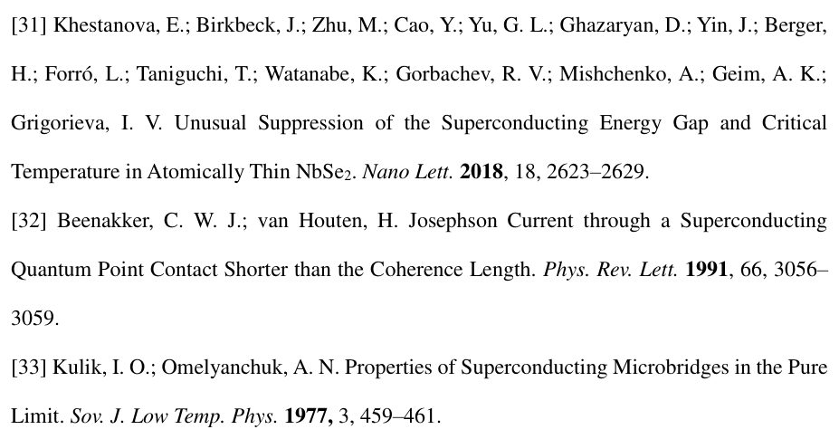
<figcaption class="paper-figure-caption"><b>Fig 1.</b> Figure 1. Structural characterization and electrical transport properties of NbSe₂/NbSe₂</figcaption>
</figure>
<figure class="paper-figure-card">
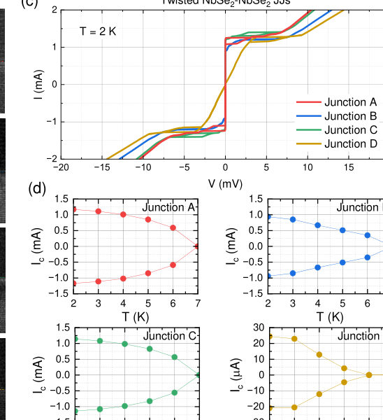
<figcaption class="paper-figure-caption"><b>Fig 2.</b> Fig. 1</figcaption>
</figure>
<figure class="paper-figure-card">
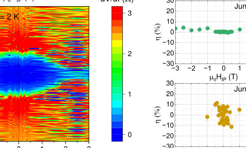
<figcaption class="paper-figure-caption"><b>Fig 3.</b> Fig. 2</figcaption>
</figure>
<figure class="paper-figure-card">

<figcaption class="paper-figure-caption"><b>Fig 4.</b> Fig. 3</figcaption>
</figure>
<figure class="paper-figure-card">

<figcaption class="paper-figure-caption"><b>Fig 5.</b> Fig. 4</figcaption>
</figure>
</div>

<p><strong>Summary.</strong> The authors investigated twisted $ ext{NbSe}_2/    ext{NbSe}_2$ junctions to determine if crystal alignment controls supercurrent diode effects. They found that while the primary Josephson coupling strength strongly depends on the twist angle due to momentum matching, the non-reciprocity remains negligible unless interface disorder is intentionally introduced. This decisively decouples the two phenomena, identifying interfacial quality as the source of apparent diode behavior.</p>
<p><strong>Why it may be interesting.</strong> This work provides a crucial experimental benchmark for understanding superconducting transport in engineered heterostructures, directly addressing how structural control (twist angle) relates to macroscopic quantum phenomena like non-reciprocity, which is relevant for Josephson circuits and quantum devices.</p>
<details>
<summary>Detailed structure</summary>
<p><strong>Main problem.</strong> The study aims to decouple Josephson coupling strength from supercurrent nonreciprocity (diode effect) in twisted van der Waals superconducting junctions, resolving debates on the role of twist angle engineering.</p>
<p><strong>Main result.</strong> Josephson coupling shows a clear dependence on twist angle due to momentum matching, but the diode response is found to be negligible unless significant interface disorder is introduced. This establishes that interface disorder, not crystal alignment, dominates non-reciprocity.</p>
<p><strong>Method.</strong> The research uses electrical transport measurements (I-V curves) combined with structural characterization (HR-TEM) on fabricated twisted NbSe2/NbSe2 junctions.</p>
<p><strong>Model / system.</strong> The physical system is a vertical Josephson junction formed by stacking two layers of Niobium Diselenide ($ ext{NbSe}_2$) with controlled twist angles. Analysis involves comparing measurements to the Ambegaokar-Baratoff relation and using the RCSJ model for dynamics.</p>
<p><strong>Key observables.</strong> Josephson coupling strength ($I_c$), supercurrent diode efficiency ($\eta$), critical current ($I_{c\pm}$), and characteristic voltage $V_c$ as functions of twist angle, magnetic field, and temperature.</p>
<p><strong>Important parameters / regimes.</strong> Twist angle ($  heta_{  ext{twist}}$), in-plane magnetic field ($\mu_0H_{\parallel}$), junction capacitance ($C_{    ext{eff}}$), and interface disorder level.</p>
<p><strong>Assumptions / limitations.</strong> The analysis relies on the RCSJ model for dynamic characterization, and it assumes that deviations from ideal behavior can be attributed to specific physical mechanisms like interface degradation or momentum mismatch.</p>
<p><strong>Figures summary.</strong> Figures detail $V-I$ and $dV/dI$ contour maps showing field and angle dependence; Figure 5 specifically plots the distinct $   heta_{  ext{twist}}$ dependence of coupling strength versus nonreciprocity ($\eta$).</p>
<p><strong>Paper structure.</strong> The paper systematically investigates transport properties by first establishing the twist-angle dependence of Josephson coupling, then measuring supercurrent nonreciprocity under varying magnetic fields and angles, and finally contrasting these results with junctions deliberately degraded to isolate the source of any observed diode effect.</p>
</details>
<details>
<summary>Abstract</summary>
<p>The microscopic origin of supercurrent nonreciprocity in van der Waals Josephson junctions remains under active debate, particularly regarding the role of twist-angle engineering in layered superconductors. Here, we investigate superconducting transport in twisted NbSe2/NbSe2 vertical Josephson junctions fabricated by dry transfer with controlled crystallographic alignment and chemically clean interfaces. High-resolution transmission electron microscopy is employed to directly determine the twist angle and assess interface quality. While the Josephson coupling strength exhibits a pronounced dependence on twist angle, with characteristic voltages maximized near crystallographically equivalent orientations and suppressed at intermediate angles, the supercurrent diode efficiency remains negligibly small and shows no systematic twist-angle dependence. In contrast, enhanced diode-like responses emerge only in weakly coupled junctions exhibiting interfacial disorder and reduced transparency. Deliberate interface degradation further amplifies the apparent nonreciprocity, yielding diode efficiencies approaching 30% together with an irregular magnetic-field-strength dependence. These results establish a clear decoupling between Josephson coupling and supercurrent nonreciprocity in twisted NbSe2/NbSe2 junctions. Our findings identify interface disorder, rather than twist-angle-controlled momentum matching, as the dominant origin of the observed diode response and provide a critical benchmark for interpreting nonreciprocal superconducting transport in van der Waals Josephson devices.</p>
</details>
<p><sub><a href="#top">↑ back to top</a></sub></p>

<p><a id="paper-2607.06253"></a></p>
<h3 id="local-spin-magnetization-in-itinerant-non-collinear-magnets-the-local-spin-berry-curvature"><a href="http://arxiv.org/abs/2607.06253v1">Local spin magnetization in itinerant non-collinear magnets: The local spin Berry curvature</a></h3>
<p><strong>Authors:</strong> Doru Sticlet, Frédéric Piéchon<br>
<strong>Type:</strong> theory · <strong>Category:</strong> other · <strong>PDF:</strong> <a href="https://arxiv.org/pdf/2607.06253v1">https://arxiv.org/pdf/2607.06253v1</a><br>
<strong>Analysis basis:</strong> full PDF text, analyzed in chunks
<strong>Topic relevance:</strong> <code>Keldysh / 2PI / non-Gaussian methods</code> <strong>1/5</strong> · <code>analog quantum simulation</code> <strong>1/5</strong> · <code>exotic spin models in light-matter</code> <strong>1/5</strong> · <code>spintronics-quantum-optics interface</code> <strong>1/5</strong></p>
<div class="figure-strip-hint">↔ Scroll figures horizontally</div>
<div class="paper-figures-scroll">
<figure class="paper-figure-card">

<figcaption class="paper-figure-caption"><b>Fig 1.</b> FIG. 1. Off-diagonal (interband) local spin magnetization as a function of the chemical potential in the conventional theory M od spin (blue) and the thermodynamic one f M od spin (red) for the ferrimagnet described by Eq. (13). The plot shows only the x (continuous line) and y (dashed line) components of the off-diagonal magnetization on the A sublattice (for the B sublattice it takes the opposite values). The results are in the strong-coupling regime with effective exchange fields hA = (4, 0, 0)t and hB = (0, 2, 0)t for a temperature T = 0.01t. The gray regions mark the energy gaps.</figcaption>
</figure>
<figure class="paper-figure-card">

<figcaption class="paper-figure-caption"><b>Fig 2.</b> FIG. 2. (a) The sites of the honeycomb lattice circumscribed by a circle of radius R = 27a (1724 sites). The symbols × and ◦mark the A sites at which the local spin magnetization is computed for all µ in panels (c) and (d), respectively. (b) The difference between the z components of the local spin magnetization in the thermodynamic and conventional theo- ries, for all sites in the lattice and µ = 0. Blue and red colors indicate negative and positive values, respectively, while the size of the markers is proportional to the magnitude of the difference. The local spin magnetization as a function of µ at the central A site (c) and an arbitrary A site (d), respectively. In (d), the difference...</figcaption>
</figure>
<figure class="paper-figure-card">

<figcaption class="paper-figure-caption"><b>Fig 3.</b> FIG. 1. Comparison between the total local spin magnetization in the conventional theory [Mspin(r)] and the thermodynamic one [f Mspin(r)] for the same parameters as in the Fig. 1 from the main text, hA = (4, 0, 0)t, hB = (0, 2, 0)t, and temperature T = 0.01t. (a) Shows the dependence on the chemical potential for all nonzero magnetization components (x and y) and both sublattices (A and B). Panels (b) and (c) show the momentum-resolved local spin magnetization from Eq. (17) in the conventional theory and the thermodynamic one, respectively, at chemical potential µ = 3.3t inside the gap, marked by the black dashed line in (a).</figcaption>
</figure>
<figure class="paper-figure-card">

<figcaption class="paper-figure-caption"><b>Fig 4.</b> FIG. 2. Effect of an alternating potential on (a) the local density of states ρα on sites α, A (blue) and B (red), with dashed lines marking the spectral gap. Panels (b), (c), and (d) zoom near the gap (marked by the gray band) to show different components of the local spin magnetization in the conventional theory Mspin against the thermodynamic one f Mspin. Panel (b) represents the off-diagonal magnetization on A sites, while (c) and (d), the total magnetization on A and B sites, respectively. The exchange fields are hA = (1, 0, 0)t and hB = (0, 0.5, 0)t, with an alternating potential V = 0.5t, and temperature T = 0.01t.</figcaption>
</figure>
<figure class="paper-figure-card">

<figcaption class="paper-figure-caption"><b>Fig 5.</b> FIG. 3. (a) Sketch of the magnetic dimer (19) with intersite hopping t and exchange fields hA and hB canted by an angle φ. (b) Scalar difference ∆Mspin (60) between the local spin magnetization predicted in the conventional and thermodynamic theory as a function of chemical potential µ and canting angle φ in units of µB. The energy levels are denoted by white dashed lines. The parameters in dimensionless units read M = 1, t = 1/4, and temperature T = 0.01.</figcaption>
</figure>
</div>

<p><strong>Summary.</strong> This work rigorously compares two theoretical definitions of local spin magnetization in complex magnetic materials. It demonstrates that while both theories agree for simple collinear systems, non-collinear textures reveal a significant discrepancy due to an emergent 'local spin Berry curvature' term derived from field response. This suggests that precise measurement techniques must account for this novel contribution.</p>
<p><strong>Why it may be interesting.</strong> The introduction of a Berry curvature term derived from thermodynamic response provides a powerful, unifying framework that extends concepts typically associated with orbital magnetism into the spin sector for itinerant magnets.</p>
<details>
<summary>Detailed structure</summary>
<p><strong>Main problem.</strong> The paper compares two methods—conventional (equilibrium density) versus thermodynamic (field response)—for calculating local spin magnetization in itinerant non-collinear magnets.</p>
<p><strong>Main result.</strong> For non-collinear systems, the thermodynamic approach predicts a novel contribution analogous to a local spin Berry curvature, leading to qualitatively different results (e.g., linear vs. plateau behavior) compared to conventional theory when probed locally.</p>
<p><strong>Method.</strong> The analysis involves deriving and comparing formulas for local spin magnetization using Green's functions and response theory, particularly focusing on the off-diagonal contributions arising from field perturbations.</p>
<p><strong>Model / system.</strong> The study uses tight-binding models applied to non-collinear ferrimagnets on lattices like square or hexagonal lattices. The Hamiltonian incorporates hopping terms, onsite potentials, and exchange fields that induce spin textures like skyrmions.</p>
<p><strong>Key observables.</strong> Local spin magnetization ($M_{	ext{spin}}(r)$), the difference between the two theoretical calculations ($\Delta M_{	ext{spin}}$), and the local density of states (LDOS).</p>
<p><strong>Important parameters / regimes.</strong> Non-collinearity angle ($\phi$), chemical potential ($\mu$), external magnetic field ($B$), and lattice geometry (square/hexagonal).</p>
<p><strong>Assumptions / limitations.</strong> The analysis often assumes zero temperature ($T 	o 0$) and examines specific limits, such as the antiferromagnetic limit or when onsite potentials are strongly alternating.</p>
<p><strong>Figures summary.</strong> Figures compare off-diagonal local spin magnetization components for ferrimagnets on square/hexagonal lattices, explicitly contrasting the linear dependence predicted by the thermodynamic theory against the flat plateau of the conventional theory inside spectral gaps.</p>
<p><strong>Paper structure.</strong> The paper introduces the problem by defining both theoretical approaches; it then develops the mathematical framework using Green's functions and Hamiltonian models for various lattice types; finally, it presents detailed comparisons across different physical regimes (e.g., collinear vs. non-collinear) to highlight the quantitative discrepancies.</p>
</details>
<details>
<summary>Abstract</summary>
<p>Conventionally, the local spin magnetization in itinerant magnets is determined from the equilibrium local spin density. Here, we propose a thermodynamic approach in which the local spin magnetization is defined from the response of the system to an infinitesimal external magnetic field. The predictions of the two theories are identical for collinear magnets, but differ qualitatively and quantitatively for non-collinear magnets. In the present thermodynamic approach, the spin coherences determine an alternative distribution of local spin magnetization due to the field-induced deformation of the energy eigenstates. This effect is captured by a Berry-curvature-like contribution reminiscent of orbital magnetization and has several distinct observable consequences. We explore the differences between the conventional and thermodynamic approaches in several test cases.</p>
</details>
<p><sub><a href="#top">↑ back to top</a></sub></p>

<p><a id="paper-2607.05564"></a></p>
<h3 id="separation-of-homogeneous-and-inhomogeneous-broadening-using-two-dimensional-coherent-spectroscopy"><a href="http://arxiv.org/abs/2607.05564v1">Separation of Homogeneous and Inhomogeneous Broadening using Two-Dimensional Coherent Spectroscopy</a></h3>
<p><strong>Authors:</strong> Adam Alfrey, Cole Tait, Joshua R. Hendrickson, Steven T. Cundiff<br>
<strong>Type:</strong> experiment · <strong>Category:</strong> other · <strong>PDF:</strong> <a href="https://arxiv.org/pdf/2607.05564v1">https://arxiv.org/pdf/2607.05564v1</a><br>
<strong>Analysis basis:</strong> full PDF text, analyzed in chunks
<strong>Topic relevance:</strong> <code>driven-dissipative phase transition</code> <strong>1/5</strong> · <code>interference shaping light</code> <strong>1/5</strong> · <code>methods for driven-dissipative</code> <strong>1/5</strong> · <code>quantum optics experiment</code> <strong>1/5</strong></p>
<div class="figure-strip-hint">↔ Scroll figures horizontally</div>
<div class="paper-figures-scroll">
<figure class="paper-figure-card">

<figcaption class="paper-figure-caption"><b>Fig 1.</b> Fig. 1. MoSe2 exciton photoluminescence lineshape is best described by a Voigt profile. Normalized 8 K MoSe2 exciton PL spectrum (open circles), excited by a HeNe laser (632.8 nm, 20 μW average power), overlaid with best-fit Gaussian (red dashed), Lorentzian (blue dashed), and Voigt (black solid) models. The Voigt profile captures both the peaked core and the extended wings more accurately than either single-component model, motivating its use as the phenomenological description for the PL spectrum.</figcaption>
</figure>
<figure class="paper-figure-card">

<figcaption class="paper-figure-caption"><b>Fig 2.</b> Fig. 2. Linear Voigt fits exhibit strong (𝝈𝝈, 𝜸𝜸) covariance. Uncertainty-weighted Δ𝜒𝜒2(𝜎𝜎,𝛾𝛾) landscape for Voigt fits to the PL spectrum in Fig. 1, constructed by scanning a (𝜎𝜎, 𝛾𝛾) grid while optimizing the nuisance parameters (𝐴𝐴, 𝜔𝜔𝑋𝑋, 𝐵𝐵) at each point. Contours indicate the 68.27%, 95.45%, and 99.73% joint confidence regions for two parameters; the best-fit point is marked by the red +. The elongated, diagonally oriented contours show that many (𝜎𝜎, 𝛾𝛾) pairs fit the one- dimensional spectrum equally well, so the linear measurement constrains only the total linewidth while leaving the homogeneous– inhomogeneous partition poorly determined.</figcaption>
</figure>
<figure class="paper-figure-card">

<figcaption class="paper-figure-caption"><b>Fig 3.</b> Figure 2 plots the contours of Δ𝜒𝜒PL 2 (𝜎𝜎, 𝛾𝛾) = 𝜒𝜒PL 2 (𝜎𝜎, 𝛾𝛾) − 𝜒𝜒PL,min 2 corresponding to standard confidence regions for two parameters. The resulting contours are elongated and diagonally oriented, demonstrating that the one-dimensional spectrum constrains only the total linewidth; an increase in 𝜎𝜎 can be compensated by a decrease in 𝛾𝛾 at nearly constant 𝜒𝜒2, rendering the</figcaption>
</figure>
<figure class="paper-figure-card">

<figcaption class="paper-figure-caption"><b>Fig 4.</b> Fig. 3. Two-dimensional coherent spectrum and extracted lineshape slices of the MoSe₂ exciton at 8 K. (a) Amplitude of the 2DCS spectrum at waiting time T = 200 fs. The linear reflection spectrum of the laser is shown along the top. The blue line indicates the cross-diagonal slice, and the red line indicates the diagonal slice through the peak. (b) Cross-diagonal slice and best fit to Eq. (8) (blue curve). The full width at half maximum 2𝛾𝛾, reflecting homogeneous dephasing, is indicated. (c) Diagonal slice and best fit to Eq. (9) (red curve), showing the broader Voigt linewidth that includes both homogeneous and inhomogeneous contributions.</figcaption>
</figure>
<figure class="paper-figure-card">

<figcaption class="paper-figure-caption"><b>Fig 5.</b> Fig. 4. Joint 2DCS analysis yields more compact confidence regions with reduced (𝝈𝝈, 𝜸𝜸) correlation. Δ𝜒𝜒2𝐷𝐷𝐷𝐷𝐷𝐷 2 (𝜎𝜎, 𝛾𝛾) landscape from Eq. (10), with contours indicating 68.27%, 95.45%, and 99.73% joint confidence regions (best-fit point: red +).</figcaption>
</figure>
</div>

<p><strong>Summary.</strong> The paper introduces two-dimensional coherent spectroscopy (2DCS) as an advanced technique to overcome the ambiguity in separating homogeneous dephasing ($\gamma$) from inhomogeneous broadening ($\sigma$) in optical spectra. By analyzing orthogonal spectral slices, 2DCS provides independent constraints that significantly reduce parameter correlation compared to traditional one-dimensional fitting methods. This allows for a more accurate microscopic understanding of excitonic linewidths in semiconductor quantum dots.</p>
<p><strong>Why it may be interesting.</strong> This work provides a powerful spectroscopic tool for characterizing open quantum systems by disentangling intrinsic decoherence mechanisms ($\gamma$) from static disorder effects ($\sigma$), which is crucial for understanding solid-state emitters and quantum materials.</p>
<details>
<summary>Detailed structure</summary>
<p><strong>Main problem.</strong> The primary challenge is separating the contributions of homogeneous dephasing ($\gamma$) from inhomogeneous broadening ($\sigma$) in measured spectral linewidths, as standard linear fits suffer from parameter degeneracy.</p>
<p><strong>Main result.</strong> Two-dimensional coherent spectroscopy (2DCS) provides orthogonal constraints that significantly reduce the covariance between $\sigma$ and $\gamma$, leading to more reliable and distinct estimates for both parameters compared to one-dimensional photoluminescence (PL) analysis.</p>
<p><strong>Method.</strong> The authors compare parameter estimation using standard 1D Voigt fitting against a joint fit of two orthogonal spectral slices—cross-diagonal ($S_{	ext{cross}}$) and diagonal ($S_{	ext{diag}}$)—obtained via 2DCS.</p>
<p><strong>Model / system.</strong> The study investigates the exciton resonance in hBN-encapsulated $  ext{MoSe}_2$ at low temperature (8 K). The spectral lineshape is modeled as a convolution of Lorentzian (homogeneous) and Gaussian (inhomogeneous) components, forming a Voigt profile.</p>
<p><strong>Key observables.</strong> Linewidth components ($\sigma$, $\gamma$), parameter covariance metrics (Pearson correlation coefficient $
ho_{\sigma\gamma}$), and confidence region shapes derived from $\chi^2$ profiling.</p>
<p><strong>Important parameters / regimes.</strong> Exciton resonance energy, temperature (8 K), homogeneous dephasing rate ($\gamma$), inhomogeneous broadening width ($\sigma$).</p>
<p><strong>Assumptions / limitations.</strong> The analysis assumes symmetric Voigt lineshapes; the method relies on the assumption that physical parameters $(\sigma, \gamma)$ are shared across both 2DCS slices in the joint fit.</p>
<p><strong>Figures summary.</strong> Figures illustrate the failure of 1D fits (showing highly elongated covariance contours) versus the success of 2DCS analysis, which yields more compact confidence regions and reduced parameter correlation. The comparison quantifies this improvement using covariance metrics.</p>
<p><strong>Paper structure.</strong> The paper first establishes the physical necessity of separating $\sigma$ and $\gamma$. It then details the methodology comparing 1D PL fitting to joint 2DCS fitting across orthogonal spectral slices, culminating in a quantitative comparison of parameter uncertainty reduction.</p>
</details>
<details>
<summary>Abstract</summary>
<p>Separating the contributions of homogeneous dephasing from inhomogeneous broadening in spectral linewidths is essential for connecting optical spectra to microscopic dissipation and disorder mechanisms. Voigt fits to one-dimensional spectra, such as photoluminescence, yield strongly correlated Gaussian and Lorentzian widths, so that neither width can be determined independently with confidence. We quantitatively show that two-dimensional coherent spectroscopy (2DCS) reduces this degeneracy by providing orthogonal spectral slices, diagonal and cross-diagonal, with complementary sensitivity to homogeneous and inhomogeneous broadening processes. As a demonstration, we measure the exciton resonance in hBN-encapsulated MoSe$_2$ at 8 K. A joint uncertainty-weighted fit maps the full $χ^2(σ,γ)$ landscape to quantify parameter covariance. Compared with linear Voigt analysis, 2DCS yields more compact confidence regions and markedly reduced parameter correlation, enabling reliable separation of the contributions to the excitonic linewidth.</p>
</details>
<p><sub><a href="#top">↑ back to top</a></sub></p>

<p><a id="paper-2607.05881"></a></p>
<h3 id="chiral-structured-superconductors-trx4-tr-rh-ir-x-ge-si-a-platform-for-mixed-parity-pairing-and-topological-states"><a href="http://arxiv.org/abs/2607.05881v1">Chiral-Structured Superconductors TrX4 (Tr = Rh, Ir; X = Ge, Si): A Platform for Mixed-Parity Pairing and Topological States</a></h3>
<p><strong>Authors:</strong> Zhenhai Yu, Yunguan Ye, Yuwei Zhou, Chaoyang Chu, Congcong Le, Lin Wu, Jian Yuan, Tong Shi, Qingxin Dong, Jinggeng Zhao, Wei Xia, Xiangqi Liu, Xia Wang, Bosen Wang, Jinguang Cheng, Yanhang Ma, Xianxin Wu, Xiangang Wan, Huiqiu Yuan, Yanfeng Guo<br>
<strong>Type:</strong> both · <strong>Category:</strong> other · <strong>PDF:</strong> <a href="https://arxiv.org/pdf/2607.05881v1">https://arxiv.org/pdf/2607.05881v1</a><br>
<strong>Analysis basis:</strong> full PDF text, analyzed in chunks
<strong>Topic relevance:</strong> <code>analog quantum simulation</code> <strong>1/5</strong> · <code>driven-dissipative phase transition</code> <strong>1/5</strong></p>
<div class="figure-strip-hint">↔ Scroll figures horizontally</div>
<div class="paper-figures-scroll">
<figure class="paper-figure-card">

<figcaption class="paper-figure-caption"><b>Fig 1.</b> FIG. 1. (a) Distorted [RhGe8], [IrGe8] and [IrSi8] dodecahedral coordination polyhedra. (b) Connectivity</figcaption>
</figure>
<figure class="paper-figure-card">

<figcaption class="paper-figure-caption"><b>Fig 2.</b> FIG. 2. (a)-(c) Projections of the P3121 structural models of RhGe4 with right-handedness along different</figcaption>
</figure>
<figure class="paper-figure-card">

<figcaption class="paper-figure-caption"><b>Fig 3.</b> FIG. 3. (a) Temperature-dependent resistivity ρ(T) of RhGe4, IrGe4, and IrSi4 near the superconducting</figcaption>
</figure>
<figure class="paper-figure-card">

<figcaption class="paper-figure-caption"><b>Fig 4.</b> FIG. 4. Further characterization of the superconductivity. (a)-(c) Cel/T versus T as well as the fitting</figcaption>
</figure>
<figure class="paper-figure-card">

<figcaption class="paper-figure-caption"><b>Fig 5.</b> FIG. 5. Temperature dependence of the low-temperature Δλ(T) for (a) RhGe4 and (b) IrGe4. The orange</figcaption>
</figure>
</div>

<p><strong>Summary.</strong> This work reports on three novel chiral-structured superconductors ($  ext{RhGe}_4$, $ ext{IrGe}_4$, $ ext{IrSi}_4$), using advanced STEM to confirm their unique crystal structure. The research establishes these materials as a platform where structural chirality and strong SOC induce mixed-parity superconductivity, alongside predicted topological Weyl points.</p>
<p><strong>Why it may be interesting.</strong> While focused on condensed matter superconductivity, the explicit link between structural chirality, broken symmetries, and topological features (Weyl points) provides a rich platform for understanding emergent quantum states that could be relevant in engineered superconducting circuits or topological quantum computing architectures.</p>
<details>
<summary>Detailed structure</summary>
<p><strong>Main problem.</strong> The research aims to explore the complex interplay between structural chirality, strong spin-orbit coupling (SOC), mixed-parity superconductivity, and topological quantum phenomena in novel superconducting materials.</p>
<p><strong>Main result.</strong> The authors successfully synthesized and characterized three chiral superconductors ($ ext{RhGe}_4$, $ ext{IrGe}_4$, and $ ext{IrSi}_4$), confirming their structure using STEM and demonstrating evidence for mixed-parity pairing and symmetry-protected Weyl points.</p>
<p><strong>Method.</strong> The study combines high-pressure synthesis, advanced structural characterization (atomic-resolution STEM), detailed superconducting measurements ($
ho(T)$, $M(T)$, specific heat), and first-principles electronic structure calculations.</p>
<p><strong>Model / system.</strong> The physical system consists of chiral-structured superconductors $ ext{TrX}_4$ ($  ext{RhGe}_4$, $ ext{IrGe}_4$, $ ext{IrSi}_4$), which possess broken mirror and inversion symmetries, leading to unconventional pairing mechanisms.</p>
<p><strong>Key observables.</strong> Superconducting critical temperatures ($T_c \approx 1.1-2.6 	ext{ K}$), magnetic penetration depth ($\lambda(T)$), specific heat jump ($\Delta C/T$), and the presence of Weyl points in electronic structure calculations.</p>
<p><strong>Important parameters / regimes.</strong> The enhancement of SOC is a key parameter driving mixed parity pairing; structural chirality ($P3_121$ space group) dictates the superconducting behavior.</p>
<p><strong>Assumptions / limitations.</strong> Traditional diffraction methods are insufficient for unambiguous chiral assignment, necessitating real-space STEM imaging. Superconductivity analysis relies on fitting specific heat and penetration depth data to various gap models (s-wave, p-wave, etc.).</p>
<p><strong>Figures summary.</strong> Figures detail structural motifs, layered arrangements, temperature dependence of resistivity and magnetization curves, and analyses comparing superconducting gap fits from different symmetry models.</p>
<p><strong>Paper structure.</strong> The paper follows a structure moving from material synthesis and definitive chiral structure confirmation (STEM) to detailed measurements of superconducting properties ($
ho(T)$, $M(T)$), followed by theoretical analysis using specific heat and penetration depth data to constrain the pairing symmetry.</p>
</details>
<details>
<summary>Abstract</summary>
<p>Chiral-structured superconductors, with simultaneous broken mirror and inversion symmetries, promote unconventional superconductivity through parity-mixing mechanisms. Yet a few bulk chiral-structured superconductors are known, partly due to the difficulty in directly determining their atomic-scale chirality. Here we report three chiral-structured superconductors, , RhGe4, IrGe4, and IrSi4, synthesized under high pressure, with Tc values of about 1.6 K, 1.1 K, and 2.5 K, respectively.Using atomic resolution Cs-corrected scanning transmission electron microscopy (STEM) combined with X-ray diffraction characterizations, we directly confirm their chiral structure (space group P3121). This real space imaging approach overcomes ambiguities in traditional diffraction based methods. These materials exhibit type-II superconductivity, and the enhancement of spin-orbit coupling (SOC) leads to the emergence of mixed parity pairing. Calculations also reveal symmetry protected Weyl points near the Fermi level, which is robust against the SOC. Our work not only expands the family of chiral-structured superconductors but also demonstrates the indispensable role of STEM in directly determining chiral crystal structures. These materials thus offer a clean platform to explore the interplay among structural chirality, SOC, mixed parity superconductivity, and topological quantum phenomena.</p>
</details>
<p><sub><a href="#top">↑ back to top</a></sub></p>

<p><a id="paper-2607.06470"></a></p>
<h3 id="phonon-mediated-thermal-transport-in-nanocrystalline-silicon-using-machine-learning-interatomic-potentials"><a href="http://arxiv.org/abs/2607.06470v1">Phonon-Mediated Thermal Transport in Nanocrystalline Silicon Using Machine-Learning Interatomic Potentials</a></h3>
<p><strong>Authors:</strong> Houssem Rezgui, Catalina Coll Benejam, Miguel Pruneda, Clivia M. Sotomayor Torres<br>
<strong>Type:</strong> theory · <strong>Category:</strong> numerical methods · <strong>PDF:</strong> <a href="https://arxiv.org/pdf/2607.06470v1">https://arxiv.org/pdf/2607.06470v1</a><br>
<strong>Analysis basis:</strong> full PDF text, analyzed in chunks
<strong>Topic relevance:</strong> <code>methods for driven-dissipative</code> <strong>1/5</strong> · <code>non-equilibrium dynamics</code> <strong>1/5</strong></p>
<div class="figure-strip-hint">↔ Scroll figures horizontally</div>
<div class="paper-figures-scroll">
<figure class="paper-figure-card">

<figcaption class="paper-figure-caption"><b>Fig 1.</b> FIG. 1: Bulk silicon phonon properties computed using different interatomic potentials: (a)</figcaption>
</figure>
<figure class="paper-figure-card">

<figcaption class="paper-figure-caption"><b>Fig 2.</b> FIG. 2: Phonon lifetimes of bulk silicon as a function of phonon frequency predicted by</figcaption>
</figure>
<figure class="paper-figure-card">

<figcaption class="paper-figure-caption"><b>Fig 3.</b> FIG. 3: Bulk silicon thermal transport properties: (a) thermal conductivity compared with</figcaption>
</figure>
<figure class="paper-figure-card">

<figcaption class="paper-figure-caption"><b>Fig 4.</b> FIG. 4: Atomistic structures of symmetric tilt grain boundaries in silicon for misorientation</figcaption>
</figure>
<figure class="paper-figure-card">

<figcaption class="paper-figure-caption"><b>Fig 5.</b> FIG. 5: Phonon density of states of near-GB and grain-boundary core regions for different</figcaption>
</figure>
</div>

<p><strong>Summary.</strong> This work establishes a robust machine-learning framework using potentials like GAP and MACE to simulate phonon-mediated heat transport in silicon. By applying this to nanocrystalline structures, the authors demonstrate that MLIPs accurately capture bulk vibrational properties while quantifying how grain boundary disorder limits thermal conductivity via NEMD simulations.</p>
<p><strong>Why it may be interesting.</strong> While focused on condensed matter physics, the core methodology—developing and applying MLIPs for calculating complex many-body dynamics (phonons/heat flow)—is a prime example of advanced classical simulation techniques that bridge quantum mechanical accuracy with computational feasibility, relevant to numerical methods in AMO physics.</p>
<details>
<summary>Detailed structure</summary>
<p><strong>Main problem.</strong> Understanding phonon-mediated heat transport in complex materials, particularly where grain boundaries limit thermal dissipation for nanoscale devices.</p>
<p><strong>Main result.</strong> Machine-learning interatomic potentials (MLIPs) provide a more accurate and internally consistent description of bulk and interfacial phonon transport compared to classical potentials. These MLIPs successfully model the temperature dependence of thermal conductivity across various structural defects.</p>
<p><strong>Method.</strong> The study develops and applies a comprehensive framework combining machine-learning potentials (GAP, MACE) with lattice dynamics calculations and Non-Equilibrium Molecular Dynamics (NEMD). This allows for the calculation of phonon properties and heat flow across interfaces.</p>
<p><strong>Model / system.</strong> The system studied is silicon (Si), examined in both bulk form and nanocrystalline/bicrystal structures featuring controlled grain boundaries. The methodology relies on training MLIPs using DFT data to accurately capture interatomic forces, enabling simulations of vibrational dynamics.</p>
<p><strong>Key observables.</strong> Phonon dispersions, phonon lifetimes, lattice thermal conductivity ($\kappa$), thermal boundary resistance (TBR), and temperature profiles across interfaces.</p>
<p><strong>Important parameters / regimes.</strong> Grain boundary misorientation angles ($10^\circ$ to $40^\circ$), interface roughness amplitudes ($A=1 	ext{ Å}, 2 	ext{ Å}, 3 	ext{ Å}$), and simulation temperatures (up to $350 	ext{ K}$).</p>
<p><strong>Assumptions / limitations.</strong> The accuracy of the thermal transport modeling hinges on the MLIPs providing an internally consistent description of vibrational properties derived from both bulk and interfacial regions.</p>
<p><strong>Figures summary.</strong> Figures compare phonon DOS and dispersion relations between different potentials (MLIP vs. classical) against experiment, show $\kappa$ vs. T curves, and illustrate temperature profiles across interfaces with varying roughness amplitudes.</p>
<p><strong>Paper structure.</strong> The paper progresses from validating the MLIP framework in bulk silicon by comparing vibrational properties to established methods, then extends this validation to model structural disorder at grain boundaries using RDFs, culminating in NEMD simulations to quantify heat transfer limitations due to these interfaces.</p>
</details>
<details>
<summary>Abstract</summary>
<p>Understanding phonon-mediated heat transport in structurally complex materials remains a central challenge for next-generation electronic and nanomechanical devices, where grain boundaries and interfacial disorder strongly limit thermal dissipation. Although classical interatomic potentials enable large-scale simulations, their limited transferability can lead to inaccuracies in vibrational properties and interfacial phonon scattering. In this work, we develop a machine-learning based framework for modeling thermal transport in bulk and nanocrystalline silicon by combining Gaussian approximation potential (GAP) and multi-atomic cluster expansion (MACE) models with lattice-dynamical calculations and non-equilibrium molecular dynamics (NEMD). Harmonic and anharmonic force constants derived from machine-learning interatomic potentials (MLIPs) are used within a unified Phonopy/Phono3py workflow to compute phonon dispersions, lifetimes, and lattice thermal conductivity, providing an internally consistent description of vibrational properties. In nanocrystalline silicon, NEMD simulations directly quantify the thermal boundary resistance associated with grain boundaries and reveal its sensitivity to interfacial roughness and the underlying interatomic description. Compared with the Stillinger-Weber and Tersoff potentials, the MLIPs provide a more accurate and internally consistent description of bulk and interfacial phonon transport, enabling more predictive modeling of nanoscale thermal transport in low-dimensional materials.</p>
</details>
<p><sub><a href="#top">↑ back to top</a></sub></p>
<h3 id="other-secondary-papers-1">Other secondary papers (1)</h3>
<details>
<summary>Show other secondary papers</summary>

<p><a id="paper-2607.05719"></a></p>
<h3 id="equivalence-between-the-axion-invariant-and-the-math1156math-symmetry-indicator"><a href="http://arxiv.org/abs/2607.05719v1">Equivalence between the Axion Invariant and the $S_4$ Symmetry Indicator</a></h3>
<p><strong>Authors:</strong> Mengyao Zhang<br>
<strong>Type:</strong> theory · <strong>Category:</strong> other · <strong>PDF:</strong> <a href="https://arxiv.org/pdf/2607.05719v1">https://arxiv.org/pdf/2607.05719v1</a><br>
<strong>Analysis basis:</strong> full PDF text, analyzed in chunks</p>
<div class="figure-strip-hint">↔ Scroll figures horizontally</div>
<div class="paper-figures-scroll">
<figure class="paper-figure-card">

<figcaption class="paper-figure-caption"><b>Fig 1.</b> FIG. 1. Map between two circles M and N. The mapping degree is 0 in (a) and 1 in (b). The number ±1 beside each preimage point is the sign of the Jacobian at that point. The counting must be performed at a regular value; point Q in (a) is not regular. Adapted from [5].</figcaption>
</figure>
<figure class="paper-figure-card">

<figcaption class="paper-figure-caption"><b>Fig 2.</b> FIG. 2. Band structure of the tight-binding model, with u = v = 1.0, mz = δ = 0.2, and ϵ0 = 2.4.</figcaption>
</figure>
<figure class="paper-figure-card">

<figcaption class="paper-figure-caption"><b>Fig 3.</b> FIG. 3. Density of states (DOS) of the tight-binding model, with u = v = 1.0, mz = δ = 0.2, and ϵ0 = 2.4.</figcaption>
</figure>
</div>
<p><strong>Summary.</strong> This paper establishes a rigorous mathematical equivalence between the quantized magnetoelectric response (the axion invariant $2P_3$) and the symmetry indicator ($z_2$) for a specific class of topological insulators possessing $S_4$ symmetry. By connecting these two seemingly different theoretical frameworks, it provides a powerful new tool to classify and predict topological properties in condensed matter systems.</p>
<p><strong>Why it may be interesting.</strong> This work is highly relevant for theoretical physicists studying topological phases of matter, particularly those bridging continuum field theory descriptions (like axion electrodynamics) with discrete band structure calculations using crystalline symmetries.</p>
<details>
<summary>Detailed structure</summary>
<p><strong>Main problem.</strong> The paper establishes a mathematical equivalence between two distinct topological invariants characterizing axion insulators: the Chern-Simons derived magnetoelectric polarizability ($2P_3$) and a symmetry indicator ($z_2$). This bridges concepts from topological field theory (response) and band theory (symmetry classification).</p>
<p><strong>Main result.</strong> The authors prove that for $S_4$-symmetric axion insulators with zero Chern numbers, the quantized magnetoelectric response $2P_3$ is exactly equal to the symmetry indicator $z_2$. This extends known equivalences to unitary, orientation-reversing symmetries.</p>
<p><strong>Method.</strong> The analysis involves rewriting the Chern-Simons expression using an $S_4$ sewing matrix, reducing the problem to calculating the degree of a map from the Brillouin zone to SU(2), and comparing this result with the calculation of $z_2$ based on eigenvalues at high-symmetry momenta.</p>
<p><strong>Model / system.</strong> The study focuses on three-dimensional axion insulators possessing $S_4$ symmetry. A specific tight-binding Hamiltonian is introduced for verification, allowing numerical confirmation of the theoretical equivalence.</p>
<p><strong>Key observables.</strong> Axion invariant ($2P_3$), Symmetry Indicator ($z_2$), and the $S_4$ sewing matrix eigenvalues at high-symmetry points.</p>
<p><strong>Important parameters / regimes.</strong> The symmetry group $S_4$, vanishing three-dimensional Chern numbers, and the modulo two arithmetic used in degree calculations.</p>
<p><strong>Assumptions / limitations.</strong> The derivation relies on stable reduction to determinant-one two-band blocks and assumes that the system has vanishing three-dimensional Chern numbers.</p>
<p><strong>Figures summary.</strong> Figure 1 illustrates mapping degrees between circles; Figure 2 shows the band structure of the model; and Figure 3 displays the Density of States (DOS) for the model, with captions detailing specific matrix values at high-symmetry points.</p>
<p><strong>Paper structure.</strong> The paper progresses by first defining the problem using the Chern-Simons form, then mathematically transforming this into a degree calculation involving the $S_4$ sewing matrix. It details the reduction to two-band blocks and finally proves the equivalence with the symmetry indicator via eigenvalue counting and numerical verification.</p>
</details>
<details>
<summary>Abstract</summary>
<p>The equivalence between the axion invariant and the $S_4$ symmetry indicator is established for three-dimensional $S_4$-symmetric axion insulators with vanishing three-dimensional Chern numbers. Starting from the Chern-Simons expression for the magnetoelectric polarizability, $2P_3=θ/π$ is rewritten in terms of the $S_4$ sewing matrix. After stable reduction to determinant-one two-band blocks, the invariant is expressed as the degree of a map from the Brillouin zone to $SU(2)$. The degree modulo two is then evaluated from the $S_4$ eigenvalues at the four $S_4$-invariant momenta and is shown to coincide with the symmetry indicator $z_2$. A minimal tight-binding model verifies the correspondence between $2P_3$ and $z_2$. The result closes a gap between the topological-field-theory description of the axion response and the topological-band-theory classification by symmetry indicators. It also extends the known response-indicator equivalence from antiunitary settings such as $C_nT$ symmetry to the unitary, orientation-reversing rotoinversion symmetry $S_4$.</p>
</details>
<p><sub><a href="#top">↑ back to top</a></sub></p>
</details>

<hr>
<p>
<a href="index.html">← Index</a>
 · <a href="papers_05.html">← Previous</a>
</p>
<hr>

</body>
</html>
